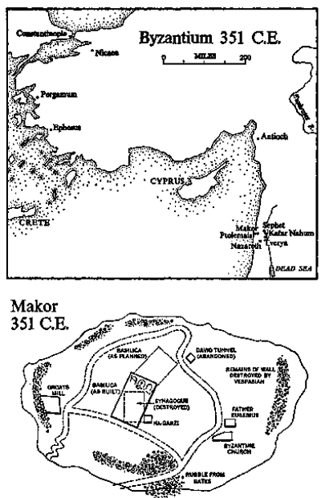

Stone from a Synagoge reused in a Church
Originally a stone lintel above the west door of the entrance to a synagogue, with decorations as shown on top: two groups of vines, leaves and bunches of grapes, beside two date palms, all symbolizing the richness of the Galilee; in the center a small four-wheeled flat wagon bearing the holy Ark of the Covenant, an acacia box containing the stone tablets of the Ten Commandments. The ark was carried by the Jews on their forty-year march from Mount Sinai to the promised land. Captured in war by the Philistines, it brought them only evil until they voluntarily returned it. Brought by King David to Jerusalem, finally placed by King Solomon in the temple, from which it vanished at the time of the Babylonian destruction. Carved in white limestone, Makor, 335 C.E., reused in 352 C.E. as part of the southwestern façade of a Byzantine basilica and recarved in that year by the original artist with three Christian crosses. Deposited at Makor March 26, 1291, during the destruction of the Basilica of St. Mary Magdalene.
Jesus Christ was born, so far as we know, in the summer of 6 B.C.E., that being sometime before the death of King Herod the Great. Jesus lived his early life in Nazareth, only sixteen miles south of Makor, and conducted his principal ministry, which covered a span of one year and nine months, along the shores of the Sea of Galilee, only eighteen miles to the east. He never came to Makor and about April 7, 30 C.E., was crucified by order of Pontius Pilate, the Roman who then served as Procurator of Judaea.
It may be surprising, therefore, to know that it was not until the year 59 C.E. that the name of Jesus Christ, the good neighbor of Makor, was first mentioned in that little town; but upon reflection this is not so remarkable. In the turbulent years of Christ’s mission on earth there were many young Jews wandering up and down the Galilee. Some, like General Josephus, tried merely to rally their people to resistance against Rome, and their motives were military. Others sought to convince the Jews that an independent government was needed, and their intentions were political. Some wandered from one community to the next, preaching stern systems for the redemption or reconstruction of Judaism, and their dreams were religious. And some went from town to town prophesying the coming of one messiah or another. A few of these latter had reached Makor, on the edge of the Jewish lands, but the rabbi Jesus was not among them.
Nor was it unusual that the town had not heard about His crucifixion on a hill outside Jerusalem, for that event was in no way unusual; one Jewish king had crucified eight hundred of his subjects on one afternoon while getting drunk with his concubines on a public platform in the middle of Jerusalem, to which his guests had been invited to enjoy the spectacle. In recent years King Herod had crucified a multitude of Jews, while lesser Roman officials had also used this traditional punishment with harsh frequency. Furthermore, the major contacts of a frontier town like Makor were never with Jerusalem or Nazareth, nor even with the settlements along the Sea of Galilee; they had to be with Ptolemais, that alien port so near at hand yet almost always in the grip of strangers who followed exotic religions. Thus, when Makor was Egyptian, Akka had belonged to the Sea People. When Makor was part of David’s kingdom, Accho was Phoenician. When Makor was ruled by Herod, Ptolemais was held by Cleopatra. And in the time of Christ, when Makor was governed by the procurators of Judaea, Ptolemais belonged to whatever Roman puppets controlled Syria. Makor had to worry about Ptolemais, not Jerusalem.
Yet it was because of Ptolemais, that ancient, ancient seaport to which triremes from Athens and hippos from Tyre had always sailed, that Makor finally heard of Jesus Christ. In the spring of 59 C.E., when the crucified prophet had been all but forgotten even in areas which had known Him well, a Roman corn ship came down from Puteoli and Piraeus to drop anchor in the fish-hook harbor of Tyre, where the captain gave deck space to a frail, baldheaded man in his sixties seeking passage to Caesarea; and next day, when the vessel had wandered down the coast a short distance to the snug harbor of Ptolemais, the traveler took advantage of the unexpected layover to go ashore and harangue any Jews who might be lounging along the waterfront. And among his chance audience at the port that day had been that same Yigal of Makor who had some years before offered his life in this city to halt the advance of General Petronius and the Roman statues, and it was by this accident that Yigal became the first resident of Makor to hear the message of Jesus Christ.
In heavily accented Hebrew the speaker had said with some pride that he was Paul of Tarsus, “a city of more than half a million lying to the north,” and he explained to the Jews of Ptolemais that although he was a free Roman citizen he was also a Jew, a Pharisee of strict education, but that a greater Jew than he had taught in Galilee and had shown men how the old preaching must give way to the new, how the law must be fulfilled outside the synagogue, and how the salvation of the human soul could be attained by following in His steps.
Paul spoke with clarity, relying upon reason to persuade his listeners. As he stood in the open air, a small man with bandy legs and a great hooked nose that sprang from the point where his thick eyebrows met, he showed signs of nervous exhaustion, as if time were slipping through his fingers; he had much to relate that day in Ptolemais, and the dull in-difference of Jews like Yigal, who stood with his hands folded behind his back, trying to calculate what the visitor was trying to say, seemed to infuriate the baldheaded stranger, and he spoke with terrible persuasiveness. He explained to the Jews that they had a chance now, on this sunny day in Ptolemais, to receive into their hearts the man who had been crucified to save the world.
“Was not this Jesus a rabbi?” a Phoenician Jew asked.
“His disciples called Him such,” Paul replied.
“Our rab is good enough for us,” the indifferent man said, and Paul did not bother to argue with him. Instead, he turned his back upon the Jews, and looking toward the sea as if he were addressing the world, explained in tempestuous Greek phrases the tenets of the new religion: “Why is there evil in the world? Because we are born in sin. How can we be saved? Because Jesus Christ, through His crucifixion, takes our sin upon His shoulders.” For some moments he addressed his impassioned oratory to Yigal, who felt a tingle down his spine as this Jewish convert to Jesus spoke of the new world of Christ in which the law of Moses was fulfilled. But Yigal mastered his excitement. He could not be attracted permanently to any religion that had abandoned Judaism, heading for new directions which he could not foresee, so he left the meeting in Ptolemais and returned to Makor. For some few days the words of Paul of Tarsus disturbed him, and for a while he thought of discussing them with Rab Naaman, but he did not do so; and as we have seen, eight years later in 67 C.E. he was caught up in struggles against the might of Rome and was himself crucified not far from Nazareth—at about the time that Paul was being beheaded for somewhat similar reasons in Rome.
But if Makor was slow to acknowledge the reality of Jesus Christ, the time came when His presence reached the little town with persuasive grace. In the year 313 the Roman emperor Constantine had seen on the eve of a vital battle near Rome a fiery cross bearing the promise “In hoc signo vinces,” and when that prophecy proved true, he had by decree ordained Christianity to be the religion of the whole Roman empire, one of the most fateful single acts ever performed by one man. And in 325 he encouraged his mother, an extraordinary woman, to go on a pilgrimage to the Holy Land to see if she could identify the places where Jesus had lived three centuries earlier.
Queen Helena had known an uneven life: a free-and-easy waitress in a Bulgarian inn, she had married a passing soldier, and when he was later offered the Caesarship it was on condition that he abandon his wife and find another more suitable, and to this he agreed. In her loneliness Queen Helena had discovered the consolations of Christianity and had encouraged her pagan friends to do the same; and when her son assumed the purple she moved from obscurity to prominence, so that her pilgrimage to the Holy Land was an event of significance. While sleeping in Jerusalem she had a vision much like her son’s: she saw the precise location not only of the cross on which Christ died but also of the sepulcher in which the body of Jesus had lain for two days. In subsequent visions she identified most of the other sacred spots, and over each one her son caused a basilica to be erected, which would serve as the focus of pilgrimages for as long as men loved Christ.
In 326 Queen Helena disembarked at Ptolemais to begin the overland trip to the Sea of Galilee, hoping to identify there the scenes where Jesus had preached, and once more her visions supplied the answers. “This must be the place where our Lord fed the multitude with two fishes and five loaves,” she announced, and a basilica was built. “I feel sure that on this spot Jesus must have delivered his Sermon on the Mount,” she said, and a second church was ordained. From oblivion she rescued those places that would become cherished throughout Christendom, and on her way back from her discoveries she stopped over at Makor, a town without walls perched on a mound, and there as she slept beside the mean little Byzantine church she had a final vision: she saw that Mary Magdalene, following the Resurrection of her Lord, had found refuge in Makor, and Helena rose next morning in great excitement to announce, “Here we shall build a fine church so that pilgrims on their way to Tiberias and Capernaum may break their journey.” Guided by her vision, she led the townspeople to the exact spot where Mary Magdalene had lived, and in accordance with the curious fate that governs such matters she chose the holiest place for ten miles in any direction, that sacred point where the cave men had erected their monolith to El, where the Canaanites had worshiped Baal and the early Hebrews had prayed to El-Shaddai. Here the priests of King David had offered sacrifice to Yahweh, while Jews rescued from Babylon had prayed to YHWH. Zeus, Antiochus Epiphanes and Augustus-Jupiter had all been worshiped on this slight rise of earth, and now the great basilica of the new religion would follow in its appointed course. Queen Helena knelt on the holy spot and, when she rose, indicated where she wished the triapsidal structure to rest, unconsciously placing her altar directly above the ancient monolith.
It was some years before the rulers in Constantinople got around to building the basilica of St. Mary Magdalene in Makor. By then the saintly old queen was dead, and she never knew whether her church of pilgrimage had been completed or not. Nor did Constantine, who died in 337, only nine years after his mother. But in the family the tradition was kept alive, and even though the descendants of Constantine warred among themselves, brother slaying brother in Roman fashion, it was always intended that their grandmother’s wish for a pilgrims’ church at Makor should be honored, so early in the year 351 the Spanish priest Eusebius convinced the rulers that the time was ripe. Consequently two ships set out from Constantinople laden with architects, slaves, stone masons and Eusebius himself. They landed at Ptolemais, and like thousands of pilgrims before them and hundreds of thousands later, started the overland march toward the Sea of Galilee, but unlike the others, when they reached the halting point at Makor they stopped permanently, which placed them within the dominion of Rabbi Asher ha-Garsi.
In these centuries when God, through the agency of preceptors like Augustine of Hippo, Origen of Caesarea, Chrysostom of Antioch and Athanasius of Alexandria, was forging a Christian church so that it might fulfill the longing of a hungry world, He was at the same time perfecting His first religion, Judaism, so that it might stand as the permanent norm against which to judge all others. Whenever in the future some new religion strayed too far from the basic precepts of Judaism, God could be assured that it was in error; so in the Galilee, His ancient cauldron of faith, He spent as much time upon the old Jews as He did upon the new Christians.
To build Judaism into its normative form, God had at His disposal the four great planks which His people had hacked from their desert experience and their battles with the Canaanites: the Jews finally accepted Him as the one God, supplanting all others; they worshiped His Torah; they were uplifted by the lyric outbursts of religious poets like King David and his chief musician Gershom; and periodically they reconstructed their society according to the flaming cries of true prophets like Jeremiah and the woman Gomer. But to preserve His Jews during the trials that loomed ahead, God required two additional planks, one common to many religions and one totally unique, and He was now about to create those necessary supports.
On that sunny morning in the year 326 when Queen Helena knelt on the earth of Makor, preparing it for the spectacular growth of Christianity, the leadership of the Jews rested in a remarkable little man named Rabbi Asher ha-Garsi, known through the region as God’s Man. From the age of three he had dedicated himself to the service of YHWH and at nine had memorized the Torah; by fifteen he knew by heart the wisdom literature of his people. At sixteen, obedient to the wishes of his parents, he married a country girl whom they had selected, and although in conformance to Jewish tradition governing holy men he restricted himself to sexual intercourse on Friday nights, he quickly fathered a string of five daughters, for whose support he worked diligently. As his name ha-Garsi indicated, he made his living by the purchase of wheat which he boiled, dried and broke into small pieces, producing the cereal so much appreciated by the city residents of Ptolemais. Groats-making was hard work and involved financial risk, for the cost of raw grain could rise or fall suddenly while the price of finished groats might be moving in the opposite direction. Better than most men, Rabbi Asher the Groats Maker understood the pressures of life, and the disappointments too, for he had always wanted a son to project his name and help him in his business, but none came and his two oldest daughters had married men who would not have been helpful in any occupation other than resting; his succeeding daughters were showing no signs of doing much better.
So the little rabbi sweated in the groats mill, worried about his hungry family, and tried to appease the Byzantine tax collectors; but his principal occupation was serving Makor as its unpaid rabbi, for in these years the Jews of the district were not rich, and it was in his conduct of this office that Rabbi Asher had gained the name God’s Man, for when members of his congregation came asking him to adjudicate their problems he first smiled at them with his sad blue eyes, which seemed to say, “You don’t have to explain about trouble to me,” then tucked his hands under his black beard, and finally said, “Before we discuss this matter, let’s agree between ourselves as to what God’s will is. If we know what He wants, we will know what we want.” In his own life he accepted without question the law as laid down in Leviticus and Numbers—Deuteronomy he held in some suspicion as being both modern and revolutionary—and he wished that his community were willing to imitate him. “It would be better if all followed the Torah,” he told his people, “but men and women are weak, so some of us Jews must set the pattern for the rest.” His gentleness had won many to a closer observance of the law, and it was recognized in Makor that in any argument which disrupted the town, if Rabbi Asher the Groats Maker could be brought into the discussion the interests of God would be represented, for even among the Christians he was known as God’s Man.
Now, as Queen Helena prepared to leave Makor, Rabbi Asher at the groats mill wiped his hands and looked with compassion at a huge, dark-skinned man with beetling eyebrows and hulking shoulders who had come to consult him on a difficult matter. At first the little rabbi was irritated by the interruption, but he smothered these feelings and said to the big man, “We’d better talk at my house, Yohanan.”
He led the way to a mean building where his younger girls were playing noisily. As he appeared they withdrew, leaving him a small room crowded with parchment scrolls rolled in the ancient manner and others whose leaves had been cut and bound in the new style. Shooing the children’s rooster from his alcove he took his position behind a small table while the hulking visitor, his prognathous jaw jutting out belligerently, waited.
“Yohanan,” the groats maker said gently, “we must first try to find what God’s will is in this matter.”
“I want to get married,” the big man mumbled.
“My reply must be what it was last week. Tirza is a married woman. No man may ask her to marry until we have proof … proof.”
The big stonecutter growled, “Three years ago her husband ran off with the Greeks. He’s dead. What more proof do you want?”
Almost as if he understood the symbolism of his act the little rabbi took his hands from beneath his beard and placed them upon a scroll of law. “In cases where the husband’s death can neither be proved nor disproved, we require fifteen years to pass before the woman can be declared a widow.”
“He used to beat her. Must she wait fifteen years for him…”
“Until the fifteen years have passed, Tirza remains a married woman. The law says…”
“The law! The law! Fifteen years for a woman who’s done no wrong?”
“So far she’s done no wrong. But if she lives in sin… outside the law…”
“We don’t care,” the big man shouted, rising to his feet so that he towered over the little rabbi. “I’m going to marry Tirza today…”
“Yohanan, sit down.” Without touching the stonecutter Rabbi Asher forced him back onto the chair, saying quietly, “Remember Annaniel and Leah. He went to sea and the boat foundered. Six witnesses swore that he must have drowned, so against my counsel Leah was permitted to remarry, and five years later Annaniel wandered back. He was still her husband and because we had broken God’s law two families were destroyed.” The little scholar replaced his hands beneath his beard, lowered his voice and added ominously. “And Leah’s lovely children were declared bastards. You know what that meant.”
Silence lay upon the small room as the stubborn workman stared at the man who had brought God into the discussion, and Rabbi Asher, thinking that he had convinced the stonecutter, decided to offer consolation. “God is not selfish, Yohanan. He forbids you Tirza but He has placed here in Makor many fine Jewish women who would be happy to marry a man like you. Shoshana, Rebecca…”
“No,” the tormented giant pleaded.
“With any one of them you could build an honest family…”
“No!” the big man repeated, leaving his chair for the last time. “Today I shall marry Tirza.” And before the little rabbi could argue further, Yohanan had left the place of law, rushing into the larger, freer area of the town, where he ran through the streets until he came to the house where the deserted woman Tirza lived, and he swept her into the air, shouting, “We are married.” From the door of the house he cried into the street, “Three men of Israel, come to hear me!” And he collected a crowd before whom he held up a band of gold which he had bought from a Greek merchant, and in a proud voice announced, “Behold, the widow Tirza is consecrated unto me with this ring, according to the law of Moses and Israel.” And they were married; but Rabbi Asher the Groats Maker, watching from the edge of the crowd, knew that they were not married.
As the rabbi returned home from the improvised street wedding, he grieved over the obstinacy of the big stonecutter and was about to enter his study when he was gripped by an irrational desire to leave the passions of the town and walk in the quieter countryside, so in a mood of perplexity he wandered toward the sloping hill that led from Makor down to the Damascus road, and he arrived there just as the procession of Queen Helena, the emperor’s mother, departed in grandeur for Ptolemais, and the little Jew stood aside as the horses, the donkeys, the palanquins, the soldiers and the bearded priests marched westward to the seaport, where their ship lay waiting. When they were gone Rabbi Asher started to return home, having forgotten in the excitement of their departure his intention to walk among the trees, but he had taken only a few steps when he was gripped by the shoulders, as it were, and turned back to his initial purpose.
He left the ragged town and wandered among the gnarled olive trees; his attention was arrested by one so ancient that its interior was rotted away, leaving an empty shell through which one could see; but somehow the remaining fragments held contact with the roots, and the old tree was still vital, sending forth branches that bore good fruit; and as he studied this patriarch of the grove Asher thought that it well summarized the state of the Jewish people: an old society much of whose interior had rotted away, but whose fragments still held vital connection with the roots of God, and it was through these roots of law that Jews could ascertain the will of God and produce good fruit. He was distressed that the stonecutter had decided to ignore that law, for Asher was certain that disaster of some kind must follow.
His attention was distracted from these matters by a gaudy bee eater flashing through the olive branches, above whose gray-green tips he could see a stork drifting idly on upward currents as if on his way to speak with God in heaven. As the rabbi stood thus, contemplating the mystery, he became aware of a noise at his feet, and he looked down to see a hoopoe bird rustling about in search of worms, and he watched as the industrious digger came upon a colony of ants. The groats maker bent down to study these minute creatures, saying to himself: Whether man looks to the soaring storks or to the tiny ants, what he sees is God. And as he knelt there close to the olive press, vacant now, for the fruit was not yet ripe, his closeness to God brought forth what could be described only as a vision: in the clearing reserved for the press he saw floating in the air a scroll of Torah, and around it—also suspended in air—a golden fence shimmering in sunlight; outside the fence were hundreds of Jews, young and old, male and female, reaching out their hands to encompass or perhaps damage the Torah, but the incandescent fence prevented them from doing either. And while he watched, a woman who could only have been Queen Helena of Constantinople, whom he had seen a few minutes before, knelt and caused a new church to rise from the earth, and about her head shone a radiance which filled the orchard; she vanished and her church, too, but the Torah remained, still protected by its golden fence. With blinding light those two dreamlike realities hung in the air, imprinting themselves upon Asher ha-Garsi’s brain; then slowly even the Torah vanished and he was left alone.
To interpret this vision he did not require wisdom. He sat on the stones of the olive press and stared at the gnarled trees with that insight which comes to a man only once or twice in his lifetime, allowing him to see ahead into the structure of the years. His first impression was of the radiance that had surrounded Queen Helena, and the power of Byzantium whereby she had drawn from the earth of the Holy Land a new church, and he foresaw that the Galilee would never again be the same. A new force, represented by Helena and her son, had entered the world, and Rabbi Asher knew that it would never be turned back. The position of the Jew in relation to this new religion would remain undetermined for some centuries, perhaps forever, but a dominant power had arrived and to ignore it would be folly. If Queen Helena, kneeling in the public square of Makor, said there was to be a basilica on that spot, Rabbi Asher was willing to believe that one would rise, for in his vision the crown of this queen had been neither copper nor brass; it was pure, radiant gold, and he knew that gold carried with it the power to command.
But his more persistent vision was that of the Torah protected by its golden fence, and he recognized this as an imperative to him personally. In wondering what he must do he recalled certain events that had taken place not far from this spot when, two and a half centuries before, General Vespasian had finally crushed Makor, destroying its walls and killing or enslaving all Jews inside. In those fearful days the greatest Jew that Makor was to produce had escaped through the water tunnel at midnight and had gone on to rally the Jews after the traitor Josephus had aided the Romans in their destruction of Jerusalem. Rab Naaman of Makor, the old man was called, a white-bearded rabbi who had lived to be a hundred and three. In his ancient years, when he weighed less than ninety pounds and could scarcely be heard through his ashen beard, he had discovered a student much like himself, a peasant who till the age of forty could neither read nor write but who had developed into one of the leading scholars of Jewish history—the legalist Akiba—and these two self-made men conspired to save Judaism; for they assembled the law whereby Jews could live now that the external focus of their religion, the temple in Jerusalem, was no more. Once all Jews had lived either in Galilee or the south, but now only a small percentage did so, for the Romans had driven the majority to Spain, to Egypt, to Babylonia, to Arabia and to countries not yet named. How scattered they were, how powerless, yet always bound to Israel by the work that Rab Naaman and Akiba had performed.
In the stillness of the olive grove, where the original patriarch Zadok had once talked with God direct, Rabbi Asher listened to the voices of Naaman and Akiba as they were remembered in the Galilee.
“Rab Naaman of Makor said: Build a fence around the Torah, that it may be protected from thoughtless infraction.”
“Rabbi Akiba said: That simple man who gives delight to his fellow creatures gives delight also to God.”
“Rab Naaman of Makor said: To live within the law of Moses is to live within the arms of God.”
“Rabbi Akiba said: They came to me crying that since the Romans have destroyed the land, Israel is poor, but I said that poverty is as becoming to Israel as a red harness on the neck of a white horse.”
“Rab Naaman of Makor said: I complained, ‘There are two men and only one gives to the poor.’ God said, ‘You are wrong. There is only one man, because he who will not give to the poor is an animal.’”
“Rabbi Akiba said: Jews are born to hope, and in desolation they must hope even more strongly. For it is written that the temple shall be destroyed and then rebuilt. How could we possibly rebuild it unless the Romans had first destroyed Jerusalem?”
“Rab Naaman of Makor said: Like a twisted olive tree in its five-hundredth year, giving then its finest fruit, is man. How can he give forth wisdom until he has been crushed and turned in the hand of God?”
“Rabbi Akiba said: Israel must not be like the pagans, thanking their wooden gods when good happens and cursing them when evil comes. When good comes, the Jews thank God, and when evil comes, they thank Him too.”
“Rab Naaman of Makor said: There is the law, and before that there is the law.”
“But Rabbi Akiba said: He who glories merely in his knowledge of the law is like the carcass of a dead animal lying in the road. To be sure, the rotting beast attracts the attention of all, but whoever passes by holds his hand to his nose, for it stinks.”
For some time Rabbi Asher recalled the homilies of the dead sages, and in the afternoon he rose inspired and returned to town happily like a bridegroom, for he concluded that he understood God’s wishes: in the vision Queen Helena had been shown building a Christian church, and obviously God approved, for she had appeared in radiant light. To Rabbi Asher this meant that he, too, must erect a holy building, and he marched to the area south of that which Queen Helena had staked out for her Christians, and there he indicated where a small synagogue should be built. He then assembled his Jews and said, “For years we’ve been worshiping in my house, and it is no longer proper for us to do so. We shall build a synagogue like those in Kefar Nahum and Biri.” His suggestion met with approval until one cautious man asked, “And how shall we pay for it?”
Here Rabbi Asher was perplexed, for the Jews of Makor were an impoverished lot. Of the thousand people then living in the area—the smallest population it had known for centuries—more than eight hundred were Jews, but they controlled none of the major industries. “How shall we pay for it?” the man asked again, and there was silence.
Then, from the rear, a big hulking man rose to his feet, the stonecutter Yohanan, and he said through his jutting teeth, “Rabbi’s right. We ought to have a synagogue. You feed me and my wife, I’ll build one better than Kefar Nahum’s.”
The Jews were aware that only a few hours before this big man with beetling eyebrows and hairy hands had defied the rabbi, and they expected God’s Man to reject his offer, but to their surprise Rabbi Asher announced, “From Ptolemais to Tverya, Yohanan is the best stonecutter, and I will give his family their groats.” In a few moments he extracted other promises which would permit the synagogue to be started, and thus began that curious but fruitful partnership between the groats maker and the stonecutter which was to make Makor beautiful again.
Prior to this the synagogues of Galilee had usually been drab affairs in the Jewish tradition of a bleak exterior and a warm interior, but now the hulking, almost brutal, stonecutter displayed a knack for carving the white limestone his donkeys hauled in from the quarries, and before long the walls of the synagogue began to show stone birds and turtles and fish, so that during the second year of his work the Jews of Makor saw that Yohanan, using the poetry of stone, was building a masterpiece. It seemed that the uglier his outward life became, the more delicately he used his chisel, so that if he had not yet found a way to live within Judaism he at least knew how to create a home in which Judaism could prosper.
For his outward life remained ugly. After the synagogue was well begun Tirza gave birth to a son, which disturbed her, for she had to face the fact that since the boy was a bastard, he could never be a proper Jew; and she began to imagine that the women of Makor condemned her as she passed. One day she ran screaming to her husband, “Rabbi Asher follows me with accusing eyes wherever I go!” She became obsessed with the idea that he was damning her for having broken the law and began to whine complainingly to her common-law husband, “Yohanan, take me to Egypt or Antioch.” When he asked what good that would do, she could give no coherent explanation but offered the irrational suggestion that there they might find her first husband. The stonecutter tried to reason with her, but nothing he said consoled her, so in perplexity he went to the rabbi and said stupidly, “Tell me what to do.”
The anguish of Yohanan’s plea impelled God’s Man to take over and he said, “I’m sure that God holds Tirza to be your wife, even though illegally. I, too, must accept responsibility for her, and if she thinks that I have personally offended her, I must assure her otherwise.” And the little man left his study to apologize to Tirza; but when he reached her house she was gone. Rabbi Asher trailed her to Ptolemais, but she had already taken ship for Alexandria, and when he sent an appeal to the rabbis of that city they replied that she had wandered off to Spain.
Now Rabbi Asher proved himself a true Man of God, for he summoned Yohanan and said, “Even though your bastard son can never be a complete Jew, let us at least do for him what we can,” and he arranged for the boy’s circumcision, during which the awkward stonecutter stood holding his son as if the child were an apparition from another world. “Let his name be Menahem the Comforter,” Rabbi Asher said as he completed the covenant between the infant and God, and when it became apparent that Yohanan would never learn to care for the boy, Rabbi Asher arranged for different women of the town to look after the child so that Menahem, a handsome, square-jawed creature with large black eyes and bright intelligence, might grow as other boys did.
His father, chin drooping on his chest as if he were a confused animal, lounged about the town after his work was done, talking roughly out of the side of his mouth and serving as a focal point for the irresponsible younger men of Makor. “This town is nothing,” he grumbled. “If you want to see the world travel inland from Antioch. Edessa! They have wine in Edessa I can still taste. Persia! I was a fool ever to leave Persia. Girls from sixteen nations gather there and they love a man who earns a little money.” He was a bad influence but was allowed to remain because he showed such skill with the chisel.
One evening when Rabbi Asher came to inspect the day’s work he had the sensation that his synagogue was growing from the earth like a stone flower, and he was content that in building this lovely place he was accomplishing God’s wish as delivered in the vision. Then he saw Yohanan working alone among the rocks, chipping casually at a chunk of raw limestone, and as Rabbi Asher watched how skillfully the stonecutter brought beautiful design out of the chaos of the rock he said, “Can you understand now, Yohanan, how the hammer and chisel of the law bring form to the chaos of life?” The big man looked up and for a brief moment seemed to catch a glimmer of what the rabbi was attempting to explain, but the spark died. At that spot, during a period of ten thousand years, ninety-nine per cent of all sparks struck by either flint or mind had flamed momentarily and died; but now Rabbi Asher saw what his stonecutter was making: a linked series of plain crosses whose ends extended at right angles, forming a kind of heavy, squarish wheel, and as soon as the rabbi saw this motif he visualized its effectiveness as a frieze for the inner walls of the synagogue, for the inherent movement of the wheel teased the eye forward from one point to the next.
“Perhaps we could use a line of them? Around the wall?” Asher ventured to suggest.
“That’s what I was thinking,” the stonecutter growled.
“What is it?”
“I saw it in Persia. A running wheel.”
“What’s it called?”
“Swastika.” And in this manner the notable design, common throughout Asia, became virtually the symbol of the Galilean synagogue, for all visiting rabbis who saw the effective frieze wanted swastikas for their buildings, too.
So the synagogue progressed and Rabbi Asher became smug; he even visited the quarries to pick out superior stones, but one day as he returned along the Damascus road he felt the world suddenly grow quiet, as if all birds had fled and he alone were present. A choking filled his throat and his knees were pulled, as if by giant fingers, to the earth, and as he knelt in the dust he witnessed the same burning light that had accompanied his first vision, and once more it illuminated the Torah and the golden fence that protected it. This time there was not one church but many, with towers and battlements, and the synagogue was in ruins. All the work that Yohanan had completed, under Rabbi Asher’s urging, had apparently accomplished nothing. The churches and the ruins faded until there remained only the Torah and the fence, noble and unchanged, so blinding in its power that Rabbi Asher threw himself prone in the roadway, a frail-bodied Jew with a long black beard to whom God was speaking, and he now had to acknowledge that on the former occasion he had not understood.
“Almighty God, what did I do wrong?” he pleaded, knocking his head in the dust. The only answer was the shimmering vision of the Torah and the fence; but from his prostrate position the groats maker saw something that he had overlooked the first time: the fence guarding the Torah was incomplete. God’s divine law was not fully protected, and now the intention of the vision was made manifest. Rabbi Asher was being summoned to dedicate the rest of his life not to the building of an earthly synagogue but to the completion of the divine law.
“O God!” the humble little man whispered. “Am I worthy to go to Tverya?” And as soon as he pronounced that name the golden fence completed itself and he bowed his head to accept the heavenly commission. “I shall place my feet upon the road to Tverya,” he said.
In the middle years of the fourth century there was in the Roman city of Tiberias, called Tverya by the Jews, a lively community of thirteen synagogues, a large library and an assembly of elderly rabbis who met in continuous session to discuss the Torah and its later commentaries, seeking thus to uncover the laws which would govern all subsequent Judaism. For hours and even months they debated each phrase until its meaning was made clear, and it was to this body of men that Rabbi Asher directed himself in the spring of 329. He had no need to hurry, for the assembly had been in session, off and on, for a hundred years and would continue for another century and a half, if not in Tverya then in Babylonia across the desert.
On his white mule Rabbi Asher rode eastward over the beautiful hills of Galilee and looked out upon the broad plains across which Egyptians and Assyrians had battled. He rode into the cliff-perched town of Sephet, which General Josephus had fortified against the Romans of Vespasian, and it was from that high point that he caught his first sight of Tverya, its white marble buildings scintillant against the blue waters of the lake. “If men can find truth anywhere,” he said to his mule, “they ought to find it down there.”
From a distance Tverya was an enchanting city, for the spacious buildings of Herod Antipas had made it a rival of Caesarea, with marble steps leading down to the lake and luxurious baths for visitors, but when Asher rode inside the walls he saw that it breathed an atmosphere of death, as if its future were abandoned. Few new buildings had been added in recent centuries and those which survived had fallen into disrepair behind their marble façades. Thus Rome was dying in its farther provinces. In Tverya there would be no miracles, but there could be the work of honest men, and it was to this work that he now directed himself.
Stopping strangers he asked where the scholars met, and the first four citizens did not even know that the group had been convening in their city for more than a century, but each volunteered to tell him how he might find the hot baths. Finally he met an old Jew who led him to an insignificant building in which the great work was being done; and, tying his mule to a tree, Asher approached the low mud-brick house. He knocked softly on the door, but was left to stand in silence. He knocked again and was admitted by a grumbling old woman who had come from the kitchen. She led him through the house to an extensive courtyard in which stood two pomegranate trees and a large grape arbor, beneath which huddled a circle of old men who did not bother to look up at his approach. At their feet, literally, crouched groups of students, following their words affectionately, while at a table under one of the pomegranate trees sat two scribes making notes of how the argument progressed. When decisions were reached, these scribes would compress into a few pithy lines the debate of months, and that would be the law. This day they wrote little as four rabbis engaged in energetic debate on a minor point.
FIRST RABBI: We are concerned with one question alone. Protecting Shabbat. I say that the man may not wear it.
SECOND RABBI: Speak out. On what authority do you make this claim?
THIRD RABBI: Then listen. Rabbi Meir had it from Rabbi Akiba that if a woman goes out of her house on Shabbat with a bottle of perfume so that she may smell nice, she is guilty of vanity and has broken Shabbat. This case is the same.
FOURTH RABBI: More to the point. The law of the sages prevents a man on Shabbat from carrying in his pocket a nail from a gallows. Why? He carries it only for good luck and it is forbidden.
SECOND RABBI: What nonsense. The man we are talking about does not seek good luck.
FIRST RABBI: Listen to the sages. A woman must not leave her house with braids of cloth. Why not? It makes her hair more attractive, and is forbidden. This is what we’re talking about.
FOURTH RABBI: Nor shall she go into the street wearing a hair net. The same case, surely.
SECOND RABBI: But remember this. A woman may go abroad on Shabbat sucking a peppercorn to keep her breath sweet.
FIRST RABBI: Only if she placed it in her mouth before Shabbat began.
THIRD RABBI: Also, the sages always held that if she happened to drop the peppercorn from her mouth during Shabbat, she could not put it back until Shabbat had ended.
SECOND RABBI: To all of that I agree. But our man is not going to drop it from his mouth. And he placed it there before nightfall on Friday.
FIRST RABBI: On those requirements we agree. It must be in his mouth before Shabbat begins.
THIRD RABBI: The real question. Has he any right to have it there at all on Shabbat? No, because it is an act of vanity. Like a woman wearing a gold ornament. Which is obviously forbidden.
SECOND RABBI: Agreed. If it is merely an ornamentation, the man must not have it in his mouth on Shabbat.
FOURTH RABBI: And I insist that it is merely an ornament.
SECOND RABBI: Hold now! He wears his false tooth in order to eat better.
FOURTH RABBI: But he could eat just as easily if he didn’t have it. A false tooth for a man is no more, no less, than a gold headdress for a woman.
SECOND RABBI: That cannot be the case. The headdress is ornamentation. The tooth is a necessity.
THIRD RABBI: False. A gold tooth is just as attractive to a man as a gold…
SECOND RABBI: Who said a gold tooth? I said a tooth. A false tooth added to the mouth for the purpose of chewing better.
THIRD RABBI: Is there a difference between a false tooth and a gold false tooth?
FIRST RABBI: Indeed! The gold tooth is worn for decoration only.
SECOND RABBI: Not true! A man buys a gold tooth because it fits better than stone and wears longer than wood. He acts from prudence, not vanity.
FOURTH RABBI: Error! Error!
THIRD RABBI: Is not a false tooth placed in the mouth the same as a woman’s curls added to her forehead? And do not the sages say that she may not wear such curls unless they are sewed on permanently?
FOURTH RABBI: Why permanently?
THIRD RABBI: Lest she inadvertently add them to her head on Shabbat.
FIRST RABBI: Sewing she can be trusted not to do because three acts are involved. Needle, thread and sewing. She knows that each is forbidden. But pinning a curl to the head is not a usual act and this she may forget, so it is forbidden.
THIRD RABBI: And a false tooth is not added to the mouth permanently, but must be put in each day, and is therefore exactly like the false curl of the woman, which may not be worn.
During the first four days that Rabbi Asher spent among the learned men of Tverya he was kept standing by the wall, a small, tentative figure, listening as his elders hammered away at the false tooth. As they inspected the problem from all philosophical and material angles, Asher learned that they had been on the subject for two months, hoping to establish from it a broad principle governing the use on Shabbat of objects that were both useful and ornamental, and at several points in the argument he felt that he had ideas to contribute, but the expositors ignored him and modesty prevented him from trying to attract their attention. On the evening of the fourth day, bewildered, he left the convocation. Did the rabbis intend to ignore him permanently? Or had he through vanity misread God’s command that he join them?
He sought guidance on these matters at the one logical place in Tverya, a small hill northwest of town, which he climbed at sunset until he came to a cave that was already holy but which would become more so as the centuries advanced: the grave of Akiba, greatest of the rabbis and savior of the law. Here Asher sat humbly, hands folded and hoping to receive from the long-dead rabbi instructions concerning his present plight, but none came. Now, whether this cave actually held the bones of the Jewish saint could not be determined, for just as Queen Helena had gone through the Holy Land arbitrarily deciding where the cherished relics of Christianity were, so devout Jews had established categorically where the saintly scenes of their religion had occurred. At Sephet certain of the great men were said to be buried, but Tverya was allotted Rabbi Meir and Rabbi Akiba, and pilgrimages to their supposed graves would continue as long as there was a Judaism.
But if Rabbi Asher was unable to communicate with the great rabbi he did find something equally important: sitting before the cave he watched the sun depart from the lake and the city of Tverya; and the play of sunset colors upon the eastern hills, the panoply of gray and purple and gold upon the grassy cliffs was so ghostlike that he felt the presence of God even more strongly than he had in the olive grove, and he submitted himself to whatever wishes God might have regarding his stay in Tverya. In this state of euphoria, while light diminished and the marble city began to fade, a wind passed down the deep valley, coming from the north, and it rippled the surface of the water as if a figure were moving across the waves. Entranced, Asher watched the progress of the giant steps, and they came directly to Tverya, where they seemed to mount the spacious marble wharf that faced the waterfront, and whatever it was that had agitated the surface of the lake took residence in the city. Reassured and exhilarated, Rabbi Asher climbed down from the tomb and returned to Tverya, satisfied to remain there until the rabbis took notice of him.
On the fifth day there was no change. He resumed his silent position against the wall and listened as the great men continued their discussion of the golden tooth, and for the entire two weeks that he was kept waiting this tooth remained the only concern; but his observation of how the rabbis worked had one salutary effect: he learned that the exposition of the law was a serious matter requiring both subtlety of mind and mastery of learning, and he understood that in settling the exaggerated problem of the tooth they were automatically deciding all lesser conflicts between utility and vanity. As he stood in the shadows he remembered the old description of a true rabbi, “that basketful of books,” and he pledged that if the time came when the men of Tverya finally consulted him, he would respond with subtlety and wisdom.
On the nineteenth day, when the guardians of the law had pretty well agreed that if a man wore a gold tooth on Shabbat he was transgressing, and when they were about to formulate a law permitting a stone or a wooden tooth, a rabbi who was trying to make a point about the inherent vanity of man, turned abruptly to Rabbi Asher and snapped, “You, from Makor. What did Rab Naaman say?”
Softly, without moving from his shadows, the groats maker explained, “Rab Naaman of blessed memory said, ‘Why did God create man only on the sixth day? To warn him. If ever he becomes swollen with pride it can be pointed out to him that in God’s creation of the world even a flea came ahead of him.’” He paused. “Rab Naaman also said, “The camel was so vain he desired horns, so his ears were taken from him.’” Without out comment the rabbis listened, and Asher concluded, “Rab Naaman said, ‘Man is born with his hands clenched, but he dies with them wide open and empty. The vanities he clings to elude him in the end, so he should not bother himself with them during his life.’” The rabbis listened approvingly, and without speaking one old man made a place for Asher to sit, and in this way God’s Man became one of the great expositors, laboring to construct the basic framework of Judaism.
To the four great planks which God possessed for the preservation of the Jews —monotheism, Torah, personal lyricism, prophecy—He would now add two more: the Talmud, and rabbis to interpret it, after which He would have a complete structure within which His Jews would henceforth live. God’s concept of the rabbi was easy to understand, for he was not much different from the ancient priest of El-Shaddai or the newer ones who were being called forth by the Christian church of Byzantium. The rabbi was apt to be more learned than the former and more personally committed to daily life than the latter, for he was required to have a wife and his congregation was always happier if he had five or six children, for then he would appreciate the burdens of the common man. The rabbi would also work for his living—of the sages meeting at Tverya during Rabbi Asher’s apprenticeship one was a fisherman on the Sea of Galilee, one a woodchopper, one a ritual butcher and one a scribe who made copies of the Torah—and no Jewish rabbi would ever accept discipline by a hierarchy of any kind: his contract was a personal one with the community that invited him to guide them. Often, as in the case of the greatest rabbi, Akiba, he would be a brilliant scholar with a memory that would be difficult to match in any other profession. He would serve as conscience, arbiter, monitor and judge of life and death. Rabbi Akiba had warned: “When you sit on a court which condemns a man to death, do not eat all day, because you have killed part of yourself.” Of every segment of his community the rabbi was a part, and when it suffered its periodic agonies, he suffered more than all, and it was this basic relationship that Asher ha-Garsi exemplified, for in the long discussions held under the grape arbor of Tverya, he quickly established himself as God’s Man, for he spoke with but one concern, to ascertain the will of God, and he always spoke humbly, as if he were only a little man incapable of knowing God’s wishes directly but able somehow to detect them by lowering his face and catching the passing whisper. Being closer to God than most men he suffered more deeply when ordinary men acted contrary to God’s law, and he was always willing to humble himself in trying to bring God and man together.
But even if a devout rabbi like Asher ha-Garsi was in essence the same as a Christian or a Buddhist priest, God’s final plank, the Talmud, bore no resemblance to anything else in the world’s religions. It was a remarkable achievement, the heart of Judaism, and it consisted of two parts: the Mishna and the Gemara. The first had been assembled by Rabbi Akiba and his followers some eighty years before Rabbi Asher was born; it was the second component upon which the expositors of Tverya and Babylonia were now working. When the two were joined together, some time around the year 500, the Talmud would be in existence.
What was the Mishna? An adroit solution to a difficult religious problem. The wise men of Judaism had evolved the principle that at Sinai, God had handed Moses two sets of laws, one written on the tablets of stone and later transcribed word for word into the Torah, and a second of equal importance which had been whispered to Moses alone, the oral law, which provided specific elaboration of the Torah. For example, in the written book of Exodus, God said distinctly, “Remember the Sabbath day, to keep it holy,” but He did not stipulate in writing what one must do to observe this commandment. It became the task of the rabbis, depending upon the oral law which God had given Moses, to clarify the commandment and make it specific.
Who knew what this oral law was? Only the rabbis. How did they know? Because it had been handed along from man to man in a solemn unbroken chain: “Moses received the Torah from God Himself at Sinai, and passed it along to Joshua, and Joshua to the Elders, and they to the Prophets, and they to the Men of the Great Assembly and they to Antigonus of Soko… Hillel and Shammai took over from them… Johanan ben Zakkai… Rab Naaman of Makor… the great Akiba… Rabbi Meir…” and in days to come the rubric would be added, “From him Rabbi Asher ha-Garsi took over,” and it would pass to Rashi, the marvelous Frenchman, then to the greatest mind of all, Maimonides, and to the Vilna Gaon of Lithuania, and on to the merest rabbi working in Akron, Ohio. These men were custodians of the oral law.
For the first fifteen hundred years this oral law had been carried only in the heads of scholars, but after the two Roman destructions of Judaea—first by Vespasian and later by Hadrian, who erased even the name of Jerusalem and changed Judaea to Palestine—a group of scholars had met in a small Galilean village not far from Makor to codify this inherited law. Thus they constructed what became known as the Mishna, which men like Rabbi Asher were required to know by heart. For example, in extension of the crisp Torah injunction not to work on Shabbat, the Mishna identified forty-less-one principal kinds of labor which were forbidden: “Sowing, reaping… baking… spinning… tying or untying knots… sewing two stitches… hunting a gazelle… writing two letters… lighting a fire… carrying anything from one domain into another…”
One does not sit down before the barber, close to the time of the Shabbat prayer. A tailor should not take his needle on Shabbat eve just before nightfall; he may forget and go out with it. Nor the scribe take his pen. One should not begin to clean his clothes, and one does not read at the lamplight, because he may tilt it. The schoolmaster may supervise the reading of his children, but he himself must not read. Similarly, a man that is in heat should not eat together with a woman that is in heat, because it may lead them to sin…
One must not put bread in the oven on Shabbat eve before darkness, nor may the cakes be put on the coal unless there is time for the crust to form before Shabbat arrives. Rabbi Eliezer says: In time for the crust to form on the bottom…
What may one use for lighting on the Shabbat, and what must one not use? One must not use cedar fiber, nor oakum, nor silk, nor a bast wick, nor a desert wick, nor seaweed, nor pitch, nor wax, nor castor oil, nor burnt oil, nor tail fat, nor tallow. Nahum the Mede says: One may use boiled tallow, but the Sages say: Whether boiled or not, one may not light with it.
The Sages, however, permit all oils: sesame oil, nut oil, radish oil, cucumber oil, tar and naphtha. But Rabbi Tarfon says: For lighting only olive oil may be used.
In this way the Mishna inspected each aspect of life and laid down the laws which bound Jews to their religion
What was the Gemara? When the completed Mishna had been used by Jews for only a short time they began to find that it was not specific enough; it proscribed thirty-nine different kinds of work, but as new occupations evolved, new rulings were required. So the rabbis restudied each category, trying to spread its elastic words over the greatest possible number of occupations and hitting sometimes upon interpretations that were masterpieces of intellectual juggling. For example, during the first month of Rabbi Asher’s service as one of the expositors the question arose as to what the prohibited occupation of sowing might include. An old rabbi with experience in farming gave it as his opinion that sowing included such collateral occupations as pruning, planting, bending trees to shape and grafting.
Rabbi Asher said, “Grafting is clearly the same as sowing, and is therefore forbidden, but pruning is clearly the opposite of sowing, for it is a cutting away rather than a planting.”
The older man said, “Hear this. Why does a man prune? To lay bare the new growth so that it may spring forward. Thus pruning is sowing.”
Rabbi Asher said, “You make it clear. Pruning is forbidden too.”
They spent a full year discussing agriculture and the kinds of farm work that may not be done on Shabbat. Using the old farmer’s theory that pruning was the same as sowing, they arrived at the extraordinary conclusion that filling a ditch was the same as plowing and that working on a hole near one’s house was the same as building, since at some later date a building might grow out of the hole.
Rabbi Asher led the group in a discussion of what might be included under the prohibition against reaping: “We learned: sheaf-binding, wire-making and cutting stone for a building are identical with reaping. Rab Naaman said they are prohibited.”
A rabbi who worked in the building trades argued, “I had it from Rabbi Jonah from Meir from Akiba: Stonecutting is the same as plowing. It is already forbidden.”
On and on the arguments went as the rabbis gathered up the loose ends of life and tied them into permanent packages. In the third year they summoned a sailor from Ptolemais to discuss the cryptic passage of the Mishna, “Tying and untying knots is forbidden on Shabbat.” Just what was involved in the tying of a knot, they asked, and to what other human activities might this prohibition extend? The sailor demonstrated what tying a knot consisted of, and after two months of discussion Rabbi Asher proposed the following general rule: “Any joining together of two things that are by nature the same is equal to the tying of a knot. Thus, on Shabbat a man may not place additional grapes in a press which already contains grapes, for that is tying a knot.”
A rabbi visiting from Babylonian, where similar discussions were taking place among the Jews of that region, said, “Why not say simply, knots tied by camel drivers, donkey drivers and sailors?”
An old rabbi said, “I heard it from Rabbi Zumzum who had it from Rabbi Meir that no man should be held culpable for a knot that could be untied with one hand.” Thus the argument progressed day after day as the great expositors laid down their specific interpretations. Their extensions would be known as the Gemara, and when their work was finished, after two and a half centuries of debate in both Tverya and Babylonia, the Mishna (Repetition) and the Gemara (Completion) would coalesce to form the Talmud (Teaching), that enormous compendium which would in turn be interpreted by the Egyptian doctor, Maimonides, and after him by others of lesser insight, so that in the end there would stand a jumbled, rambling, inspired portrait of Judaism in action. It was this Talmud that provided the fence around the Torah, protecting God’s law from unintentional trespass; God had said merely, “Remember Shabbat,” but the rabbis had staked out their fence far from the actual Shabbat, defending the sacred day behind a multitude of laws. It was on this holy work of building the fence of the Talmud that Rabbi Asher would spend the rest of his life.
This did not mean that he lived permanently in Tverya, engaged only in legalistic discussion. Like his fellow rabbis from Kefar Nahum and Biri, he continued to supervise the spiritual life of his home community, and since he also had a wife and three unmarried daughters, it was his added responsibility to see that his groats mill made a profit. So whenever the crops were harvested he mounted his white mule to ride back through the Galilean forests to his little town in order to purchase grain, and one of his most satisfying moments came when he guided his mule up the incline into Makor to greet his family and to inspect conditions at the mill.
It was with bursting joy that Rabbi Asher reached the privacy of his home at the end of these trips, for he would rush, tired and dusty, to greet his wife and embrace his children. Gathering his family about him he would lead them in singing either psalms or folksongs, and he would toss his youngest daughter into the air, catching her as she squealed with joy at having her father home again. At meals he would stand at the head of the table and look upon his family, praying with sheer happiness: “God, the journey is ended and I am once more with those I love.”
But when he was alone he would stand humbly in one corner of his room and begin a serious communication with God, thanking Him gravely for having kept the family well and warm, and as he prayed a frenzy would possess him, and he would begin bowing from the waist, left and right, running forward to meet God, then retreating out of respect. At certain passages in his prayer he would throw himself full length upon the earthen floor so forcefully as to bring dust, then he would rise and the bowing would be repeated. At the end of his extended prayer he would have worked his way completely across the room and perhaps halfway back again, a little man in ecstasy, prostrating himself before his God. His attitude to prayer summarized his morality: “When I am in the synagogue praying for others, I make the prayers short lest my brothers grow tired, but when I am alone with God, I cannot prolong them sufficiently.”
When it was known in Makor that the rabbi was home again, many visitors would come seeking either guidance or charity, and with the former, Asher observed the rule which he had often defended in the discussions at Tverya: “Deal leniently with others but strictly with yourself.” And he did what he could to soften the harsh blows of peasant life in a town where tax collectors were brutal and Byzantine soldiers cruel. With those who sought charity, he was guided by the unequivocal precept of Rab Naaman of Makor: “A man who will not give to the poor is an animal,” and in some years the profits of his groats mill were largely dissipated because of the cereal which he gave away. As for the manner of dispensing charity, he had formulated a rule which would be incorporated into the Talmud: “Take care of the other man’s body and your own soul.” If the worst drunkard came to him for food, Rabbi Asher first fed him, then prayed for him and sent him away. “Lecturing him about his evil ways should be postponed for another day,” he explained. “Charity and exhortation must not be mixed.”
Wherever he moved in the community he tried to bring joy, telling mothers that their sons would become scholars, assuring young girls that they would find husbands, and encouraging farmers to hope for profitable seasons. He had always been impressed by that teaching of the Mishna which said, “In the hereafter each man will be asked to explain why he abstained from those normal pleasures of life to which he was entitled.” Songs, dancing, wine in moderation, feasts with one’s friends, games for children and young people, courtship in the spring and caressing children were occupations, Rabbi Asher said, which brought joy to life, and those who were in his presence for any time found cause for laughter.
His principal regret came when he resumed work at the groats mill, hauling the bags of wheat, and he had to acknowledge that so far he had found no one to run the place satisfactorily in his absence. He had tried several men, but they had lacked the integrity he required, and so in his absence the place merely struggled along, watched over by his busy wife and earning only half the profit it should have done. Once he had hoped that his two sons-in-law would assume this responsibility, but they showed no inclination to do so, and now when he returned to Tverya it was with the doleful realization that he had still not found a man to make the groats.
This deficiency was regrettable in that Asher’s ancestors had devised a special way of making the cereal: they took well-ripened wheat, boiled it in water like the other groats makers, but to their water they added salt and herbs, and when the time came for drying the grains they did not pour the water away, like the others, but allowed it to stand in the sun until the wheat absorbed it, taking back into the grains whatever nutrients would otherwise have been washed away. Asher also allowed his wheat to dry in the sun for at least a week longer than his competitors did, so that when the grains were finally cracked by his stone mill, forming pieces smaller than rice, they had a chewy, nutty flavor that all appreciated. Once when he was about to return to Tverya a Greek merchant protested, “Rabbi, why do you fool with those white beards? Any man can write down the law, but it takes a man chosen by God to make good groats.” It was a pity, Asher thought, that he had found no manager.
Therefore, in the winter of 330, when his wife announced that she was pregnant again, well past the normal age for conceiving, he experienced a surge of joy, for he convinced himself that by this miracle God was determined to send him a son to inherit the groats mill. He went about town, a little man of forty-eight with a beard that was showing gray, telling his friends, “You can see it’s only reasonable. Five daughters in a row. The last has got to be a boy.” He decided to call the child Matthew, God’s Gift, and sometimes in the street when he spoke of his son his eyes would dance and only with difficulty did he keep his feet from doing the same. “He was sent me by God,” the little rabbi proclaimed, but in the autumn his wife gave birth to a sixth daughter and she was named Jael.
Subdued, Rabbi Asher mounted his white mule and rode down the caravan road to Tverya, where under the grape arbor he was about to begin a specific chain of deliberation which would have a most permanent impact on all Jews: during the nine years from 330 through 338 the expositors would discuss principally one pregnant verse of Torah. God first stated this concept in Exodus and then, because apparently He considered it vital to His plans for the Jews, He repeated the warning twice: “Thou shalt not seethe a kid in his mother’s milk.” That was all God said; possibly He did not want a mother sheep to be abused by knowing that its offspring was to be cooked in her milk, which would double her anguish, as it were. Or the restriction might have been imposed because Canaanites to the north indulged in this practice and anything a Canaanite did was to be avoided. At any rate, God had reiterated the simple directive, and it fell to the rabbis to interpret it.
As they studied the cryptic sentence, three words stood out. Seethe was probably meant to include all kinds of cooking. Kid was meant to include all kinds of meat. And milk was intended to cover all possible variations of dairy products. Under these initial interpretations the expositors began to erect those complicated dietary laws which would set the Jews apart. Extensions were made which only men of ingenuity could have deduced, and routines for kitchen and cooking were established which would enable Jews to observe every eventual sanction growing out of God’s brief commandment. The dietary ritual had a certain beauty to it and was in conformance with the sanitary laws of the time. Milk and meat must be kept forever separate, for the slightest trace of one could contaminate the other, and a drop of milk carelessly spilled into a kettle used for cooking meat might mean that the pot would have to be shattered lest the community be led unknowingly into error. At first the rules laid down by the rabbis were not intrusive: Jewish kitchens became a symbol of God’s covenant and to keep dishes separated was a trivial thing. Jewish women came to enjoy cooking in accordance with divine law, as whispered by God to Moses and conveyed by him to generation after generation of holy men.
But now Rabbi Asher advanced the idea that even the cooking vapors from a pot containing beef could contaminate a whole kitchen where milk was being used, and no local housewife could contest him; when in Babylonia other rabbis began to evolve other refinements even more difficult to observe, no one could contest them, either. For what the rabbis were doing, in part consciously and in part unconsciously, was to create a body of law that would bind the Jews together as they went into exile to the Diaspora. Without a homeland the Jews would live within their law and become a nation mightier than those which had oppressed them. Without cities of their own they would as a cohesive unit help determine the destinies of cities they had not yet seen. Wherever they went—to Spain or Egypt or Argentina—they would take with them the decisions of the rabbis of Tverya, and within the limits established by these decisions they would live, a more permanent group of people than any who had surrounded them in their two thousand years in Israel. Gentiles, observing their homelessness, would construct the myth of the Wandering Jew, but in reality this phrase was meaningless, for no matter where the Jew wandered, if he took with him the Talmud he was home.
Fraught with future meaning though these discussions of cooking were, the consultations which best exemplified the Talmudic process were those ingenious deductions whereby procedures for ritual worship were established. All Jews agreed that such worship must not be conducted by haphazard formula, but what constituted proper ritual was difficult to determine, for on this matter the written Torah was silent; it spoke of a time when worship was conducted at the temple in Jerusalem; and the oral Torah was equally deficient because the transmitters of the secret information had not foreseen the time when Jerusalem would no longer exist. And even when the Romans did finally allow the city to be rebuilt, a new temple was not permitted. Therefore the rabbis were required to legislate for a religion whose externals had changed markedly.
The rabbi of Kefar Nahum, known to the Christians as Capernaum, where the largest of the Galilean synagogues stood, remembered that the Eighty-second Psalm said clearly, “God standeth in the congregation of the mighty…” and from this it was deduced that God was willing to convene with His faithful in a public congregation. How many were required in the forming of a congregation? No man could say. Was it three persons? Or seven? Or twelve? Each of these numbers had mystical value and it was probable that God had preferred one of them. But no one knew.
The rabbi of Biri, the town with the loveliest synagogue—a gemlike building with many columns constructed of white limestone—recalled that in the Book of Numbers, God had asked Moses directly, “How long shall I bear with this evil congregation, which murmur against me?” and although this referred to an evil group, it was nevertheless one that God had recognized as an officially constituted congregation. The rabbis tracked the reference backward and found that it related to the twelve men whom Moses had dispatched into Canaan to spy out the land: “And the Lord spake unto Moses, saying, Send thou men, that they may search the land of Canaan, which I give unto the children of Israel: of every tribe of their fathers shall ye send a man…” So putting the two texts together they deduced that when God spoke of a congregation He was referring to at least twelve men. But the rabbi of Kefar Nahum pointed out that of the twelve evil men who spoke against the Lord, one should be excused, for Caleb of the tribe of Judah had spoken on behalf of the Lord: “And Caleb stilled the people before Moses, and said, Let us go up at once, and possess it…” So this made eleven the proper number for a congregation. But then Rabbi Asher discovered that of these eleven still another, Joshua of the tribe of Ephraim, had also spoken in defense of the Lord: “The land, which we passed through to search it, is ah exceeding good land. If the Lord delight in us, then he will bring us into this land, and give it us; a land which floweth with milk and honey.” Thus, in the congregation, evil though it was, there had been twelve men less Caleb and Joshua, so ten was the required number, and the famous summary was evolved: “God is willing to meet with ten street sweepers but not with nine rabbis.” The question then arose as to what constituted a man, and after years of discussion it was determined that a man was any male child who had reached the age of thirteen; henceforth no public worship was possible without the presence of ten Jewish men above the age of twelve.
In this patient, involuted and often arbitrary manner the great rabbis wove that net in which God would hold His chosen people. Every word of the Torah—even the punctuation mark—was analyzed. A single concept of the Mishna might occupy the rabbis for a year, and their Gemara, when completed, would be further dissected for fifteen centuries. As a result the Talmud would constitute an inexhaustible source of wisdom which men could study all the days of their lives, still finding rewards even if they lived, like Moses, to be a hundred and twenty.
One day in the year 335 Rabbi Asher rode home to find that Yohanan, on his own initiative, had taken a step which altered the appearance of the Makor synagogue. The little rabbi, unprepared for what the surly stonecutter had done, went as usual to the door to inspect progress and found running down the length of the interior two rows of marble columns whose antique beauty gave the heavy room a distinct touch of paganism. “Where did you get them?” the rabbi asked suspiciously.
Afraid of being rebuked, Yohanan growled, “My son Menahem… he heard the old people saying… mysteries hidden in the earth.” He hesitated, unsure of himself. “Columns of gold, they said.”
“Your son? Found these?”
Uneasily the big stonecutter mumbled, “The other children won’t play with Menahem. He went digging… out there. Uncovered the end of one column. It wasn’t gold.” He waited apprehensively.
Rabbi Asher could see that the pillars were pagan and their shimmering colors could only be interpreted as adornment and he was tempted to order them thrown out, but reflection assured him that at least they were not graven images. “Who made them originally?” he temporized, but Yohanan could not guess. He was unable to imagine that a Makor citizen like Timon Myrmex had once spent several years selecting these eight choice columns from the thousands that were piling into Herod’s Caesarea in order to adorn the Roman forum. How beautiful they were to Yohanan and how earnestly he hoped that Rabbi Asher would allow them to remain.
“They can stay,” the groats maker snapped. “But don’t do things like this again.”
When this approval was granted, Rabbi Asher found that Yohanan wanted to discuss a problem which the rabbi had long anticipated, so with some apprehension God’s Man said, “We can’t discuss it here. Stop work and come to my house.” The two men left the synagogue and moved to the cool stone house from which the rabbi’s wife managed the groats mill while he was absent. Asher led the way to the alcove where he kept his volumes, and there, surrounded by visual evidence of the law, he sat in a large chair, placed his hands on his table and said, “Now what do you wish to tell me about your son?”
“How did you know?”
“We will discuss him many times.”
“He’s nine. He’s growing up.”
“I know.” Rabbi Asher could visualize the boy Menahem as he played in the streets, a vagrant child who seemed likely to become a handsome young man. The rabbi sighed with regret over what he must now say, and postponed his judgment by asking, “You’re wondering what to do with Menahem?”
“Yes.”
“I’m wondering, too,” the rabbi said.
“In what way?”
Rabbi Asher retreated a little, like a legalist seeking protection in documents. Clasping his knuckles firmly, until the tips of his fingers were white, he said, “Now come the difficult years, when those who break the law begin to reap their rewards.”
“What do you mean?” Yohanan demanded.
Rabbi Asher, having delivered his sermon, relaxed the nervous clasping of his hands and said gently, “I’ve been wondering what we shall both do about Menahem, and I find no solution. For he’s a bastard.”
“I’ll protect him!” the stonecutter insisted.
“He remains a bastard,” Rabbi Asher said softly, “and he can never marry.”
“I’ll buy him a wife.”
“Not a Jewish wife.”
“I’ll make him part of this town,” Yohanan shouted, driving his fist against the rabbi’s table till the parchments trembled, but the little man did not flinch, for he had anticipated the problem now to be faced by Yohanan, and it could not be dispelled by force.
In Deuteronomy, God’s law was stated in clear, cruel terms: “A bastard shall not enter into the congregation of the Lord; even to his tenth generation shall he not enter…” Ten generations was a euphemism for eternity and in Palestine the law was enforced: bastards were outcasts forever and ever. Of course, in simple cases where an unmarried girl had a child by an unmarried father, bastardy was not involved, for the girl could marry any man and make her child legitimate, nor did bastardy result from the frequent instances in which Jewish women were raped by invading soldiers, for such children inherited the Jewishness of their mother and were easily absorbed into Jewish life; but when a man like Yohanan willfully had intercourse with a married woman, the event was a threat to all Jewish homes and the offspring had to be stigmatized as bastard and eternally outcast from the community.
With tears of compassion forming, Rabbi Asher explained this implacable law to the stonecutter: “Why does Menahem play alone? Because he’s a bastard. Why is he marked wherever he goes? He’s a bastard. When he grows to manhood, why will he be unable to find a Wife? Because of the sin you committed against the law.”
“No!” the distracted workman cried. “This law I will never accept,” and with this threat he terminated the first of his many confrontations with the rabbi.
During his fourth visit Rabbi Asher asked, “Why must you fight the law, Yohanan?”
“Because I’m determined to see my son a Jew… here in Makor.”
“That he can never be.”
“How shall he live?”
“As an outcast, finding consolation in the fact that those who in this life suffer for the Torah find everlasting bliss hereafter.” This was the second time in recent months that Rabbi Asher had used this concept—a life hereafter—and it was strange to hear a Jewish philosopher speak in this way, for the Torah did not sponsor such belief: immortality, resurrection, heaven as a place of reward and hell as a depth for punishment were largely New Testament doctrine. But the Jews of the Diaspora, because of their long residence among pagan Persians and Greeks, had belatedly acquired these doctrines and now Rabbi Asher felt no betrayal of Judaistic dogma in asserting that Menahem must accept an abominable life on earth in order to win a sweet life hereafter.
“But why must he suffer in this life?” Yohanan demanded. “A blameless boy?”
“Because you broke the law,” Rabbi Asher said, and before the stonecutter could protest anew, the little groats maker continued, “In God’s Torah there are 613 laws, 365 prohibitive laws, one for each day in the year, 248 affirmative, one for each bone in the body. You are bound by this ancient law. I am bound by it. Even God Himself is bound by its framework, for it establishes order. Your son can find no happiness on this earth and he can never be a Jew, but if he makes himself a slave to the law, he will upon his death win redemption.”
“Why Menahem? Why doesn’t the punishment fall on me?”
“It is not within our power,” Rabbi Asher said, “to understand either the prosperity of the wicked or the affliction of the righteous. Train your son to accept his fate, that he may be an example to others.”
“Is that all you can offer?” the workman asked.
“That is the law,” Rabbi Asher replied.
It was in this year of 335 that the stonecutter began his carving of the lintel over the west door of the main façade, and as he worked he kept Menahem at his side, explaining to him the significance of what he was doing: “I imagine vines growing out of the earth, and through the floor of the synagogue, and up that wall to bring us grapes. Four bunches. Eight grapes in each bunch. That’s enough to make two glasses of wine, one for you and one for me.”
“Do your palm trees grow through the stone floor, too?”
“Of course! And they bring us sweet dates to eat with our wine.”
“And the little wagon? Does it come through the doors?”
“With white horses galloping.”
“What’s in the wagon?”
“The law,” Yohanan said. And he was so devoted to the synagogue he was building, this limestone prison that would immure him, that he worked with extra care on the big stone, depicting on its face the things he loved. When it was finally hoisted into place, when the wooden ceiling was thrown across the eight columns of King Herod and the frieze of joyous swastikas was complete, with stone snakes and herons and oak trees to allure the eye, Yohanan concluded that his work in Makor was finished, and he thought that he was free to leave. “I’ll take my son and try some other town. Maybe there… with a different, rabbi…” But when the time came for him to go Rabbi Asher came to see him, and he handed Menahem, now ten years old and a gifted boy, some sweets which he had purchased in a Greek shop.
“Yohanan,” the rabbi said, “you mustn’t leave Makor. You’ve made this your home and we appreciate you. The people love you.”
“I’ve been thinking… well, a boat to Antioch… maybe Cyprus.”
“You can’t flee, Yohanan. This is your home… your law.”
“The law I won’t accept.”
“At Antioch, would you escape it?”
“I’ll stop being a Jew,” the stonecutter threatened.
This irresponsible statement Rabbi Asher ignored, saying, “You and I shall always live in the Galilee. The law and the land bind us to it.”
The idea struck Yohanan forcefully and he broached his next suggestion for the synagogue. “When I worked at Antioch we made designs with bits of colored stone.”
“Designs?” Rabbi Asher asked suspiciously.
“Not graven images. Mountains and birds, like on the wall.”
“From bits of stone?”
“If we covered the floor with such designs,” the stonecutter suggested, but Rabbi Asher could not visualize what he was talking about, so Yohanan took a stick and outlined a tree on the floor. “We make it with pieces of stone,” he explained.
As usual Rabbi Asher was apprehensive about unnecessary adornment, but he had just spoken so harshly concerning the law and he was so desirous of keeping the stonecutter in Makor that against his better judgment he approved the floor. “But no images,” he warned.
So once more Yohanan, seeking a beauty he did not understand, locked himself in Makor. When Menahem was eleven, growing tall like his father, the boy began to suffer from his outcast status, so Yohanan took him on his trips through the Galilee, searching for red and blue and purple limestone. They made a curious pair, a hulking, awkward giant of a man and his handsome son, exploring the countryside. They sought out remote mountain sites and camped beside cliffs which streams had cut through layers of rock, and wherever they probed they found not only colored stone but the absorbing wonder of the Galilee, that timeless habitat of beauty. Crossing swamps they saw the one-legged heron and the gulls which came inland from the sea; Menahem found the cattails, those strange and furry plants which pleased him so much, while his father sat silent, spying upon the jackal and the fox.
When Menahem was twelve, slim and agile where his father was graceless, Yohanan led his workmen to selected sites, where colored rocks were quarried in flat slabs for transportation to Makor. At the quarries father and son saw the inner heart of their land—chips flying from the earth and the roots of large trees cut aside so that the valuable colored strata could be followed—and they caught a new, structural aspect of the Galilee. Looking beyond the dust, they saw the beauty of the valleys, the fall of a stream issuing from the hills or the crest of a mountain they had not seen before, and from these different units a strong design began to take form in Yohanan’s stubborn mind. He decided to place in his pavement the soul of the Galilee, no less, and he formulated in vague shapes and weights the final pattern. So far only one part of the design was certain: olive trees and birds would be included, for to him they were the Galilee.
It was in this year of 338 that Menahem, the twelve-year-old son of the stonecutter, first became aware of Jael, the eight-year-old daughter of the groats maker. This occurred when the rabbi’s wife, called upon to deliver four extra sacks of groats to a Greek merchant from Ptolemais, could find no men to help her and thought of enlisting Menahem to turn the drying grains and then to grind them between the stones. He enjoyed the work, and when his father disappeared on a tramp through the hills searching for an elusive purple limestone, he stayed on at the groats mill, and one morning as he was turning the stone he looked up to see the rabbi’s daughter smiling at him. She was a beautiful child, with blond pigtails, blue eyes and the liveliness of her father, and she had not yet inherited the animosity practiced by the older children toward Menahem.
“Are you the one they throw stones at?” she asked innocently as she watched him work.
“Yes.”
“What’s your name?”
“Menahem. My father’s building the synagogue.”
“The big man?” she asked, hunching herself over to imitate Yohanan’s bearlike walk.
“He would be angry if he saw you making fun of him,” Menahem said with the sensitivity that had been kicked into him by the people of Makor.
She stayed with him, chatting inquisitively, and during the time required for the four extra sacks she watched his motions. “Father turns the stone the other way,” she advised him. “Father holds the sack with his knees.” Finally, when the four bags stood ready for the Greek merchant, she perched on top of them, directing Menahem how to clean up.
His work on this emergency job was so much appreciated by the rabbi’s wife that she kept him on, and in time he replaced one of the men who had proved to be both lazy and intractable. With Menahem’s sober, self-directed energy the mill turned out almost as much cereal as it had under the guidance of Rabbi Asher, and once or twice the perceptive youth caught a glimpse of the future: he would become the foreman at the groats mill and then the contempt that the boys in the streets held for him would vanish. Accompanying this hopeful vision was Jael’s presence, day after day; when he went for walks among the olive trees she tagged along, a lovely blue-eyed little girl making impulsive observations.
“Sister said I shouldn’t play with you, since you’re a bastard.”
Menahem did not flush, for the boys of Makor had long since clubbed into him an acceptance of this word. “Tell your mother you’re not playing with me. You’re helping me make groats.”
“At the mill it’s work,” Jael said. “But in the olive trees it’s playing.”
Often she took his hand as they walked under the benevolent trees, some so old and tattered that they must topple in the next wind, others as young and supple as Jael herself. “I like to play with you,” she said one day, “but what is a bastard?”
At twelve Menahem himself was not sure of what the word signified, except that it covered an ugly situation in which he was involved; but at thirteen—that critical age for Jewish boys—he was to discover in full measure the nature of his taint. This was the year of initiation, when he should have entered the synagogue dressed in a new set of clothes, climbed to the rostrum where the Torah was read on Shabbat morning, stood before the sacred scroll and chanted for the first time in public a portion of God’s word. At that moment, in the presence of the men of Makor, he would cease being a child and would state with assurance, “Today I am a man. The things I do from this day on are my responsibility and not my father’s.”
But when the time came for Menahem to take this dramatic leap from boyhood to manhood, thus entering the adult congregation of Israel, Rabbi Asher, God’s Man home from Tverya, had to advise the boy, “You may not enter the congregation of the Lord, neither now nor to the tenth generation.”
Yohanan began to bellow. He would take his son to Rome. He would halt his work on the mosaic pavement. He contrived other threats that merely made him sound noisy, while his doomed son stood aside—a tall, slender young fellow of thirteen in that agonizing age when the passage of a bird’s feather across the hand can cut like a sharpened knife. For three days he listened to his father and Rabbi Asher brawling, and he heard for the first time in brutal clarity the details of his birth. At last he knew what bastardy was and the terrible exclusion it entailed, not for the author of the sin but for the recipient.
Other boys his age, against whom he had protected himself in the streets, put on their new clothes and made their appearances before the congregation, standing uneasily at attention as Rabbi Asher instructed them in the ways of God. Abraham, the son of Hababli the dyer, a clod of a boy who would never acquire any appreciation of Judaism, to whom the presence of God would never be a reality, stumbled his way through a section of the Torah and proclaimed that he was now a man, and this oaf was accepted into the congregation, but Menahem was not, nor would he ever be.
In despair he fled Makor and for two days no one could find him. Rabbi Asher, sensing the heavy blow that had fallen upon him, was afraid that he might have destroyed himself, as bastards in Palestine sometimes did, but Jael, knowing Menahem’s habits, went into the olive grove and found him sleeping in the hollow core of a patriarchal tree beneath which they had once played. Taking his hand she led him back to her father, who said to the outcast, “You are more of a man than the others, Menahem. On you falls the weight of the law, and the manner in which you accept that burden will determine your dignity on earth and your joy hereafter. My wife says that your work at the groats mill is exceptional. You shall have that job as long as you live, and may God grant repose to your stormy heart.”
“The synagogue?” the boy asked.
“That is forbidden,” the rabbi said, and the sternness of this verdict was so dire, delivered thus to a child of thirteen, that the bearded man wept and took Menahem in his arms, consoling him: “You shall live as the child of God… as the man of God. The sages have said, ‘The way of a bastard is cruel.’” He wanted to say more, but his voice broke with passion, and the two parted.
So his thirteenth year brought to Menahem confusion but also an understanding that many adult men never acquire. At the groats mill he worked intelligently, calculating what must be done to protect the trade, and establishing himself as the practical foreman of the place. It was not unusual that he, an outcast, should be working for the rabbi who had proscribed him; at the dyeing vats Abraham’s father used slaves who were not Jewish, and other Jews hired pagans who still worshiped Baal and Jupiter on the high places back of town. Menahem was happy to have work, and Rabbi Asher was pleased to have at last someone in charge whom he could trust to maintain his high standard.
At the same time the boy’s father had reached the stage in building the synagogue when he must begin laying the mosaic floor, and bitter though he was at the treatment accorded his son, he felt inspired to proceed with this work, so whenever Menahem was not busy at the rabbi’s mill he helped at the rabbi’s synagogue. In these contradictions a youth entirely outside the congregation found both his work and recreation inside Judaism, and in this ambivalent condition his thirteenth year was passed.
Construction of the mosaic had proceeded only a little way when Yohanan found it necessary to consult with Rabbi Asher, but the bearded expositor had returned to the grape arbor of Tverya, so the stonecutter and his son set out through the forest for Menahem’s first trip to the Sea of Galilee; and as they reached Sephet they climbed a steep hill and the boy saw for the first time that radiant body of water and the marble city of Tverya, and they stopped as if the great hand of beauty had halted them: mountains held the lake in a purple embrace; brown fields were as soft as the feathers of birds; gray haze rose from the Jordan; and flowers shone like flickering stars within the meadows. As the stonecutter, in appearance so unlike an artist, looked down at the shimmering lake, he finally visualized the design for his mosaic: mountains, lake, olive trees and birds fell into place and he experienced that consuming urge to create which takes precedence over all other compulsions. So far as Yohanan was concerned, the pavement was complete; now all he must do was spend five years in executing it.
When he entered the gracious, decaying city and led Menahem along the waterfront, he was half pleased, half irritated to notice that many girls lounging near the fishing boats turned to stare at the handsome youth, and he regretted that he had not followed his earlier instinct and taken the boy to a new life in a new land, but building the synagogue had held him captive and his conflicting obligations were tangled in his mind. Finally he found the mud-walled house where the expositors were meeting, and there he sent a messenger to advise Rabbi Asher that visitors had arrived. After an hour the little rabbi appeared, his eyes sad because of some wish of God that he had been unable to explain to his colleagues, but when he saw Menahem standing gravely in the sunlight he was reminded of the boy’s honorable acceptance of his burden, and admiration for the youth cleansed his mind of the sorrow it had been harboring.
“I am pleased to see you, Menahem,” he said gently.
“We’re ready to start the floor,” Yohanan interrupted.
“All right,” he said with no enthusiasm.
“I lack one thing.”
“Get it”
“I’ll have to go to Ptolemais… with money.”
Rabbi Asher frowned. Like the rest of the great expositors he saw little money, but he was willing to listen. “What’s the problem?”
“The design I plan…”
“What is the design?”
“The Galilee.”
“What about it?”
“It needs purple. At many points it needs purple stone. And I’ve found none.”
“I saw some,” the rabbi said. “Beyond Sephet.”
“I saw that too. It crumbles.”
“In Ptolemais? Have they purple stone?”
“No, but they have purple glass. Cut into squares.”
Rabbi Asher considered this problem for some minutes. He was willing for Yohanan to build the floor but he wanted to spend no money for it. “What do you need purple for?” he parried.
“Kingfisher’s feathers. The hoopoe bird, too.”
Rabbi Asher studied this carefully. “Use other birds.”
“I thought of that,” Yohanan replied. “But I also need purple for the mountains.”
“I suppose so.” He turned and addressed the boy as his equal. “Is the mill making money, Menahem?” The boy nodded, and the rabbi said, “Buy the glass in Ptolemais.”
“I’ll get some golden glass, too,” Yohanan added.
“Gold? That sounds like adornment.”
“It is,” the stonecutter admitted, “but it will make the pavement glisten… in just a few spots.”
Rabbi Asher conceded and was about to dismiss his workmen when he thought of Menahem. “Wait a moment,” he said and left to consult with his associates, who were discussing whether a housewife was permitted to throw out used dishwater on Shabbat. The argument had been in process for some days, with the Sephet rabbi arguing liberally that throwing out the dishwater was a logical extension of preparing the Shabbat meal, which rabbis had always permitted, but with the Biri rabbi contending that throwing out the water was equivalent to sowing, “for from the freshly watered earth seeds might spring forth,” and this was specifically prohibited. Now Asher interrupted the expositors with a problem of different gravity.
“The stonecutter of whom I spoke… and his bastard son. They’re outside and I thought to bring them in.”
The Kefar Nahum rabbi protested against discussing individual cases, but an old man who had come from Babylonia for these sessions said, “Our great Rabbi Akiba would have stopped discussion even with God in order to speak with children. Fetch the boy.”
So Rabbi Asher returned to the street and summoned Yohanan and Menahem into the cool courtyard, where the scholars saw with their own eyes what a promising youth was among them, and the old man from Babylonia cried, “With the appearance of such a youth the sun rises!”
Menahem was made to stand facing the great expositors, while his father remained against the wall, listening, and at last the scholars reached a typical rabbinical conclusion: “A bastard may under no circumstances enter the congregation of the Lord for ten generations. But there is a way.”
The old man from Babylonia explained: “Rabbi Tarfon, of blessed memory, and Rabbi Shammua, too, said, ‘Let the bastard boy when he is past the age of twelve steal an object worth more than ten drachmas. He is arrested and sold into slavery to a Hebrew family. Then he is married to another Hebrew slave. And after five years the owner emancipates them both and they become freedmen. And as new freedmen their children will be welcomed into the congregation of the Lord.”
Yohanan heard the words with dumb astonishment. While the rabbis solemnly discussed where the theft must take place to make it an honest theft, and how the boy must be arrested and before what witnesses, the big stonecutter felt that a world of incomprehensibility was crashing about his ears. This was insanity, what the rabbis were saying, and it would take a man with no beard and no learning to tell them so. In bitterness he looked at his tall son as he stood self-consciously before the judges who were counseling this extraordinary course of action, and he was inspired to reach out and grab the boy by the hand and lead him from that confused company, but then he heard the old rabbi from Babylonia calling him, and he found himself moving obediently to stand beside his afflicted son.
“Yohanan, stonecutter of Makor,” the saintly old man was saying, “you see how the irresponsible actions of a headstrong man lead him and his offspring into trouble. Rabbi Asher tells us that you were warned not to contract an illegal alliance with a married woman, but you went ahead. Now you have no wife and your son is in grave trouble…”
Up to this point Menahem had stood calm before the judges, accepting their review of his case as a repetition of the abuse he had received since childhood; even Rabbi Asher’s talks with him in Makor had been so understood; but now as the stranger from Babylonia droned on with words of an impersonal gravity “never able to marry… an outcast forever from the Jews… only recourse is selling himself into slavery… he can never be clean, but his children can be saved…” the boy caught the full force of their meaning and uttered a convulsive sob, covering his face with his hands to mask his shame. Once he looked up to seek consolation, but the judges had none to offer. Finally Yohanan put his arm about him, saying quietly, “Come. We must go back to work,” but Menahem could not move, and his father had to drag him away.
If the Talmud which the rabbis were compiling under the grape arbor of Tverya had consisted only of laws as remorseless as the one invoked against Menahem ben Yohanan, neither the Talmud nor Judaism could have long endured, but this was not the case; the Talmud was also a testimony to the joy of Jewish living. Its preaching on the law was hard and clear, but side by side it contained abundant passages which tempered that law to make the finished document a singing, laughing, hopeful summary. The Talmud was a literature of a people, crammed helter-skelter with songs and sayings, fables and fancy; and one of the reasons why the rabbis from Kefar Nahum, Biri and Sephet were so eager to work upon it was that their meetings were so much fun: lively argument sparked by the joy of personal clashes and a sense of being close to God.
Only a massive work could hope to capture the vigor and fellowship of these meetings, and the Talmud became such a masterpiece. Its final size was difficult to comprehend: the Torah upon which it was built was brief; the Mishna was many times as long; the Gemara was much longer than the Mishna; and the commentaries of Maimonides and the rest were in turn much longer than the Gemara, the Mishna and the Torah together. The Torah consisted of five books, the Talmud of 523. The Torah could be printed in two hundred and fifty pages, but the finished Talmud required twenty-two volumes.
In a major commentary on this vast, formless work the name of Rabbi Asher, God’s Man, appears eleven times, three in connection with legal decisions, eight in those frivolous, lovely passages which evoke the day-to-day life of Jews in Palestine: “Rabbi Asher ha-Garsi told us: Antigonus the wily seller of olive oil used three tricks. He allowed sediment to gather in the bottom of his measure so that it contained less. At the time of judging he tilted the measure sideways. And he taught himself to pour so that a large bubble of air formed in the middle of his jug. At his death God judged him according to his own measure. The sediment of his sin nearly filled the jug. It was tilted so far to one side that most of eternity slipped from him. And that day God poured with such a bubble!”
Two quotations from the groats maker concerned the wild life of the Galilee, as he had observed it on his trips: “Rabbi Asher told us: the hoopoe bird was walking along the ground and the bee eater was flying in the sky. Cried the latter, ‘I am closer to God.’ But Elijah, peering down from heaven, warned, ‘He who works in the soil is always in the arms of God.’ From which Rabbi Bag Huna deduced, This proves that the farmer is closer to God than the merchant.’ But Rabbi Asher replied, ‘Not so, Huna. All men who work are equal.’”
It was this Rabbi Bag Huna who offered the famous definition of a Talmudic scholar: “He should be able to concentrate so thoroughly upon the Torah that a seventeen-year-old girl could pass his desk completely naked without distracting him.” To which Rabbi Asher said, “I fear not many would pass that test.”
Rabbi Asher made three comments upon the Torah: “Get old and get gray, get tired and get toothless, but get Torah.” “The law is like a jar filled with honey. If you pour in water, the honey will run out and after a while you will have cheapened the mixture until there is no honey left.” “At the gate of the shop a man has many friends. But at the gate of Torah he has God.”
He is remembered principally, however, for the echo of laughter that hung over Tverya when he was present. “Rabbi Asher the groats maker said: A man who laughs is more to be cherished than one who weeps; a woman who sings, than one who wails. And God is very close to the child who dances for reasons which he cannot explain.” He argued for a God who loved even outcasts like Menahem, the stonecutter’s boy. He punctured sham, upheld the dignity of work, spoke for a happy marriage in which husband and wife shared equally, and bore constant testimony that God was a generous and a forgiving deity. “Rabbi Asher ha-Garsi said: Few have been tested as Rab Naaman of Makor was tested. When the Romans were about to destroy his town, Rab Naaman was offered safety through flight, and he deserted his friends. When he died he threw himself before God, crying, ‘The scar of that shameful act is still upon my heart,’ but God lifted him from the ground and said, ‘When you fled through the tunnel that night you took with you a new understanding of the law, and with Rabbi Akiba you saved My Torah. One shred of the law administered with compassion is more important than a hundred towns, and the scars on your heart I brush away.’”
Rabbi Asher’s final comment on the Torah was simple: “He who knows Torah and does not teach it to others is like a single red poppy blooming in the desert.”
His adherence to this last principle made it impossible for him to refuse when the rabbis asked him to instruct students in the yeshiva operated at Tverya for the training of young scholars. Classes convened in an old Roman building by the lake, and there Rabbi Asher would stand, a little old man in a white beard, talking at random about the joy he found in Judaism: “My guiding light has always been Rabbi Akiba. He saved the Mishna for us, and I love the memory of this man. From childhood I aspired to follow in his steps.” When students asked why he considered Akiba the greatest of the rabbis, he replied, “He cultivated a personal relationship with God, but he also directed himself to the problems of how his Jews could at the same time be faithful to God who controlled heaven and obedient to the Romans who controlled the earth. Today we could learn much from Akiba.” When his students, some of them hotheaded young men who were growing restless under Byzantine rule, brought the discussion down to the present, asking how he would behave toward the Byzantine invaders, he replied, without equivocation, “Study the final hours of Akiba. Every possible concession he made to Rome, but in the end he had to proclaim that when the will of God and the law of empire clash the former must prevail.”
It was therefore each student’s responsibility to ascertain God’s intentions, and to help them in this task Rabbi Asher proposed certain drills: “If our desire is to uncover God’s wishes, we must develop minds that can penetrate shadows, for the mists produced by living obscure the truth and you cannot discern it unless you sharpen your wits.” At this point he would unroll a scroll of Torah and read from Leviticus: “These also shall be unclean unto you among the creeping things that creep upon the earth; the weasel, and the mouse, and the tortoise after his kind, and the ferret, and the chameleon, and the lizard, and the snail, and the mole. These are unclean to you.”
Having read this, he would say, “God Himself forbids His people to eat the lizard. I want you to find one hundred reasons why the lizard should be eaten.” When his students protested that this might be blasphemous, Rabbi Asher explained, “Again and again the great rabbis have warned us that when God handed Moses the sacred law, He placed it in the hands of men so that it might exist on earth and not in heaven, to be interpreted by men. The Torah is what we say it is, you and I in all our frailty, and if God made a mistake in forbidding us to eat the lizard, we had better find out about it.” He would crash his hands upon the table and cry, “The Torah exists only on earth, in the hearts of men, and it is what we say it is.” He always told his students of the day on which the Prophet Elijah came back to earth following a great dispute among the rabbis, who asked him fearfully, “Was God angry when we changed His word?” and Elijah told them, “No! God clapped His hands gleefully and cried, ‘My children have defeated Me! They live on earth and they know the problems of earth. O, My beloved children, always be as wise as you were today.’” Sometimes students would protest, “But you speak of God as if He were a human being, and yesterday you told us He is a spirit,” and the little rabbi would thunder, “Of course He’s a spirit. He has no body nor hands either. I’m telling you a story. Accept it as that.” And he would stomp from the room, stopping at the door to shout back, “Tomorrow! A hundred reasons why Jews should eat lizards.” Then he would add softly, “Imagine, perhaps one of you, in this little room in this little city, will correct the error of God, and tomorrow night He will clap His hands again and cry, ‘Once more My children have defeated Me! That blessed city of Tverya.’”
He had found that when a man was driven to construct a hundred sophistical reasons for denying Leviticus, the man had to consider the ultimate nature of God. Sometimes the yeshiva students contrived ingenious answers: “In Exodus it says that after God had created all the animals and before He created man, He reviewed His work and it is written, ‘And God saw that it was good.’ Since He made this judgment after the creation of the lizard but before He created man, the lizard must have been good in the abstract, always and forever, without reference to man. And it must still be good, and can therefore be eaten.”
Another student once argued, “God created first the earth, and as a father loves most of all his first-born, so God loves first of all His earth. Of all the animals that live upon this beloved earth, the lizard presses his belly closest to the earth and cannot live away from it. Therefore he is even closer to the earth that God loves than man, and as part of the earth he must be good, and Jews can therefore eat him.”
One year an especially clever student advanced an argument that would be retained in the Talmud: “We often have to choose between two precepts of our Lord that appear contradictory. Now listen. In the commandments He tells us, ‘Thou shalt not steal,’ yet He Himself stole a rib from Adam to give mankind its greatest blessing, woman. Now He tells us not to eat lizards, but if we did we might find them to be a blessing also.”
Day after day Rabbi Asher encouraged his students to pursue their adroit reasonings, and when the last had been proved specious, he surprised everyone by saying, “Now bring me a hundred reasons why the lizard cannot be eaten,” and when this had been accomplished he felt that his students were beginning to acquire the tenacity required of anyone who presumed to study Jewish law. He loved to tell his students a story which summarized his attitudes on this matter of intellectual inspection: “A Roman came to Rabbi Gimzo the Water Carrier, and asked, ‘What is this study of the law that you Jews engage in?’ and Gimzo replied, ‘I shall explain. There were two men on a roof, and they climbed down the chimney. One’s face became sooty. The other’s not. Which one washed his face?’ The Roman said, ‘That’s easy, the sooty one, of course.’ Gimzo said, ‘No. The man without the soot looked at his friend, saw that the man’s face was dirty, assumed that his was too, and washed it.’ Cried the Roman, ‘Ah ha! So that’s the study of law. Sound reasoning.’ But Gimzo said, ‘You foolish man, you don’t understand. Let me explain again. Two men on a roof. They climb down a chimney. One’s face is sooty, the other’s not. Which one washes?’ The Roman said, ‘As you just explained, the man without the soot.’ Gimzo cried, ‘No, you foolish one! There was a mirror on the wall and the man with the dirty face saw how sooty it was and washed it.’ The Roman said, ‘Ah ha! So that’s the study of law! Conforming to the logical.’ But Rabbi Gimzo said, ‘No, you foolish one. Two men climbed down the chimney. One’s face became sooty? The other’s not? That’s impossible. You’re wasting my time with such a proposition.’ And the Roman said, ‘So that’s the law! Common sense.’ And Gimzo said, ‘You foolish man! Of course it was possible. When the first man climbed down the chimney he brushed the soot away. So the man who followed found none to mar him.’ And the Roman cried, ‘That’s brilliant, Rabbi Gimzo. Law is getting at the basic facts.’ And for the last time Gimzo said, ‘No, you foolish man. Who could brush all the soot from a chimney? Who can ever understand all the facts?’ Humbly the Roman asked, ‘Then what is the law?’ And Gimzo said quietly, ‘It’s doing the best we can to ascertain God’s intention, for there were indeed two men on a roof, and they did climb down the same chimney. The first man emerged completely clean while it was the second who was covered with soot, and neither man washed his face, because you forgot to ask me whether there was any water in the basin. There was none.’”
While Rabbi Asher in Tverya taught this compassionate interpretation of the Torah, Yohanan and his son hiked back to Makor under the heavy burden of their portion of the law, and when Menahem reached home he sought consolation in hard work at the groats mill, where Jael came to talk to him, and he told his father, “I cannot go to Ptolemais”; so Yohanan went alone and after some days returned with two donkey-loads of purple glass and a small parcel of golden cubes. He was now ready to proceed with his masterwork.
In an open-front shop not far from the new synagogue he installed six men whose job it was to take the slabs of colored limestone which had been quarried from the Galilean hills and to saw them into long strips somewhat less than half an inch square across the face. Then, with chisels, they took the lengths of stone and chopped off half-inch segments, so that at the end of the day each man had about his feet a little pile of colored cubes, and when the reds and blues and greens and browns had accumulated in sufficient quantity Yohanan began building the mosaic.
In his fourteenth and fifteenth years Menahem helped his father place the cubes: on a bed of thin cement spread over the original floor Menahem would fill in the background spaces with ordinary gray-white cubes, while his father sketched the areas where color was required, and gradually the two would bring the large design down to a small focus where some bird or tree was indicated, and here with deft, stubby fingers Yohanan would construct from a bagful of mixed stones the gracious forms that made the pavement come alive. With a small wedged hammer he would strike off slivers of brown rock and with these would build a midsummer fern, dry and withered as it bent in the wind off the hills, and on the tip of the fern he would place a bee eater, perfectly constructed of pastel blue and yellow squares, with bits of the purple glass for wing tipping; slowly the father and son evoked in the synagogue of Makor the essence of their homeland: the sweeping hills and silvery streams, the crested hoopoe bird in mauve and white, his tail outlined in purple glass from Ptolemais. It never occurred to the two modest workmen that they were creating a masterpiece, but they did sense from time to time that they were composing a muted song to the goodness of the Galilee as they had come to know it.
The day finally came when an olive tree was needed in one corner of the design, and Yohanan stepped aside to watch approvingly as Menahem constructed his first object: with brown and green stones, with a few touches of red and blue, he built a living tree on the floor of the synagogue and Yohanan realized that in his son he had found an artist. But with each stone the boy laid down he grew older; he was now sixteen, when Jewish youths could be betrothed, and in the mornings as he worked at the groats mill he would listen while Jael—now a striking child with flaxen hair—chattered about the wedding of such-and-such a couple. If things had been otherwise, a young fellow like Menahem with a good job and clean appearance would have been considered a catch; but no uncles with nieces of marriageable age came to discuss wedding contracts with Yohanan, and the last years of work on the mosaic were spent in deepening bitterness.
Menahem became eighteen and nineteen and the net of the law closed more tightly about him. Now the boys his age were mostly married and some had children of their own, but no girl in the town would look at him, except young Jael, who was becoming a beautiful young woman. At fifteen she found it embarrassing to wait at the mill, but sometimes she intercepted Menahem as he walked from the mill to the synagogue, where the final stages of work were in progress. Occasionally the two would leave the town and stroll among the olive trees, and there one evening beside the ancient tree in whose cavernous interior Menahem had once slept he kissed the rabbi’s daughter for the first time. It was like the creation of a benevolent new world, the first experience of belonging he had known since childhood, and his love for Jael became the cardinal hope of his ugly life.
The ensuing years were as painfully lovely as any that Menahem would know: he could not court Jael openly, but he could kiss her secretly; yet he knew that she was reaching the age when proper suitors must appear with attractive offers. Her marriage was delayed only because Rabbi Asher still had one older daughter to marry off before he got to Jael, and this occupied his attention when he was in Makor. Finally, in the year 350, the groats maker found an unlikely family with a son who had a slanted eye and no great prospects, and this fellow agreed to marry the rabbi’s older girl, so Menahem knew that Jael’s turn was next.
One day as he worked in the mill filling sacks which the rabbi held open, he blurted out, “Rabbi Asher, can I marry Jael?”
The little rabbi, now sixty-nine years old, snapped his head forward so that his beard interrupted the flow of the groats. “What did you ask?” he demanded.
“Jael and I want to marry,” the boy said.
Rabbi Asher let the mouth of the sack fall shut, ignoring the groats that Menahem spilled about his feet. Without speaking he left the mill and went to the synagogue, where he upbraided Yohanan. “What have you encouraged your son to do?” he asked.
“Work hard. Save money. And leave this place.”
“What did you tell him about my daughter?”
“I never spoke to him…”
“That’s not true!” the rabbi stormed.
Getting no satisfaction from Yohanan, he ran home, where he found Jael working with her mother. Unawed by her father’s excitement the girl admitted that she loved Menahem. “He’s so much wiser than the others. He works hard, too.”
Her words had to be respected, for they carried their own justification; in the five unsatisfactory marriages which Rabbi Asher had arranged for his older daughters he had not come close to locating a husband as promising as Menahem ben Yohanan. In a kind of desperation he had been forced to accept men who were lazy, or not observant Jews, or stupid, and now his youngest daughter had discovered for herself a husband who would be an adornment to any household: a young man capable of running the groats mill and likely to prove a good father. Without speaking further the little rabbi left Jael and went to the room where it was his custom to pray.
Throwing himself on the floor he cried, “God, what must I do?” He rose, dancing here and there, bowing his body, running backward and forward, and again prostrating himself full length in the dust. He then prayed for nearly an hour, struggling with the concepts of God, of Torah and of law. Finally, a little man worn out from his wrestling with the deity, he lay humbly on the floor and accepted judgment. When he understood clearly what was required he rose, returned to where Jael waited and kissed her with a tenderness unusual even for him who had never feared to demonstrate his love for his children. Without speaking he left the house and went to the dye vats, where within a few minutes he arranged a contract for the marriage of his daughter Jael to Abraham, son of the dyer Hababli.
With maximum speed the wedding was arranged. A canopy was erected at the rabbi’s house and jars of wine were purchased from the Greek who kept a shop near the old Christian church, but on the morning of the wedding Jael imprudently ran to the groats mill, where she stood before Menahem, sobbing, “Oh, Menahem. It was you I wanted.”
Her father, having anticipated such rashness, quickly appeared to lead his daughter home, and Menahem spoke to her no more. That evening he watched from the edge of the crowd as Abraham, whom he had known as a graceless boy and a bully, stood with a gold cap on his head, waiting under the canopy as ashen-faced Jael was brought to him: he had not expected his father to acquire for him so lovely a bride. When the improper wedding was concluded, the prayers having been recited by Rabbi Asher himself, when the glass was broken and feet had trod the pieces, Menahem, watching in anguish, swore that he would no longer live in such pain.
He waited until the bride had been carried off by the still befuddled groom, and the guests had drunk the wine and had departed in the night, then sought refuge in the olive grove where he hid in the darkness. When morning came he went soberly to the home of Rabbi Asher and asked to speak with him. The little guardian of the law sat in his alcove, his long beard covering his hands, and he asked, “What do you wish, Menahem?”
“Am I truly sentenced to such a life?”
Slowly Rabbi Asher took down a scroll of the Torah, unrolling it to a passage whose words he indicated with a thin forefinger: “A bastard shall not enter into the congregation of the Lord, even to his tenth generation.” He took away his hands and the scroll rewound itself, as if it had a life of its own.
“I cannot accept it. I’ll go to Antioch.”
To Rabbi Asher the threat was familiar: nearly a quarter of a century before in this room Yohanan had uttered those same words, but the stonecutter had found himself held fast by custom and had not gone to Antioch. Quietly the little rabbi explained, “If you did flee to some other city, you would find yourself in the arms of Jews, where the law abides.”
“There’s no escape?”
“None.”
It was now that Menahem voluntarily reopened the subject which he had first heard discussed twelve years before under the grape vines of Tverya and which he had often subsequently pondered. With deliberate care he asked, “But if tonight I steal goods worth ten drachmas…”
Eagerly Rabbi Asher replied, “We would arrest you, sell you as a slave, marry you to another slave, and after five years set you completely free.”
“And I would be clean?”
“Not you. But your children.” The old man paused. He was approaching his final years and was increasingly aware of his responsibilities as God’s Man, and something of the joy and love of the non-legal discussions in Tverya flooded his heart, and he confessed, “Menahem, you are my son, the keeper of my mill. Please, please steal the ten drachmas’ worth and win back your place within the law.” Leaving his parchments he ran with short steps to where Menahem stood, and throwing his arms about the young man, kissed him and cried, “At last you shall be a Jew of the congregation.”
In this way Menahem finally submitted himself to the law. Departing from the rabbi he headed back to the synagogue to ask his father to arrange a theft and an arrest before witnesses so that he might be sold as a fictitious slave; but as he went to inform Yohanan of his submission he met coming up the hill into town a caravan of donkeys, architects, stone masons and real slaves led by the priest Eusebius, a tall, sober Spaniard who had served in Constantinople and who was now coming in his black robes and silver crucifix to build the Basilica of St. Mary Magdalene. He was a thin, solemn man of imposing stature, gray at the temples, lined in the face, and he entered Makor with the stately spirituality of one familiar with God. The first citizen he encountered was Menahem, visibly perplexed, and for a moment the two strangers stared at each other. Then, surprisingly, the Spaniard’s austere face broke into a warm, enveloping smile; the lines in his cheeks deepened and his somber eyes glowed with a promise of friendship. He bowed slightly to Menahem, who felt himself drawn to this impressive churchman who had come to modify the town.

When John Cullinane lived in Chicago he attended Catholic mass occasionally and funerals rather often, but whenever he worked overseas he tried to attend local Catholic churches regularly in order to see their rich variation in architecture and ritual. For example, at the end of two months’ work at Makor he had prayed with the Carmelite monks on Mount Carmel, with the Salesians at Nazareth, with the Benedictines at the Galilean church of Loaves and Fishes, with the Syrian Maronites in Haifa, and with the Greek Catholics in Akko.
He found the strange services exciting, not only from the spiritual point of view but also from the historical; there were some liturgies he could scarcely understand, while others seemed rather close to the Irish church he had known as a boy, but common to all was evidence of Catholicism’s ability to accommodate itself to many cultures, relying upon a central core of authority to insure the continuity. The more Cullinane saw of his ancient church in the Holy Land the more impressed he became with its vitality, for although the state of Israel was predominantly Jewish, Cullinane discovered everywhere this vigorous Catholic continuum based upon Arab Christians who, sometimes against formidable tyranny from either Rome or Constantinople, had retained their special rites since the early centuries.
By no means had Cullinane visited all the types of Catholic church available in the Galilee; he hoped especially to see those mysterious branches which had broken off from Rome: the Greek Orthodox in Kefar Nahum, the Russian Orthodox in Tiberias. And he was interested in the Monophysite groups that had rejected both Rome and Constantinople: the Abyssinians, the Armenian Gregorians, the Egyptian Copts. But the nature of his work halted Sunday excursions, for at Friday noon each week all digging at Makor stopped, and none of course was permitted on Saturday, which was the Jewish Shabbat. Then on Sunday digging resumed, and since this was the first workday of the week, he felt that he must be present. He was thus kept from exploring further into the local life of his own church, and although this irritated him somewhat as an archaeologist, he felt no loss as a worshiper, for had he been at home with a free American-style Sunday he would rarely have gone to the local cathedral.
What he did do was what he had done wherever he had been engaged in excavations: each Friday afternoon he climbed into his jeep, usually alone, and drove to some nearby village to participate in the Jewish sunset services which welcomed Shabbat. There he would mingle with the crowd, put an embroidered yarmulke on the back of his head, and try to penetrate the mystery of the ancient religion into which his workmen were digging. He did not do this because he was inclined toward the Jewish interpretation of life—although he found it congenial —but rather because as a man who would spend ten years excavating at Makor it behooved him to know as much as he could about the civilization that he was exhuming.
He had behaved in this way when excavating in Egypt, where he had been a faithful worshiper in the Friday mosques, and when digging in Arizona, rising before dawn to participate in the evangelical rites practiced by the Mesa people. If in the future he were called to dig in India he would there become a sympathetic Hindu, and in Japan a Buddhist. His instinct in this matter was good: a man who would later presume to write about the successive layers of life in Makor required to know as much as possible about all aspects of that life, and he had already spent a dozen years studying the languages, ceramics, metal ware and numismatics of the Holy Land, none of which was so instructive as the religion.
So as the summer passed, John Cullinane became less a Catholic and more a Jew, immersing himself in the weekly ritual that had kept the Jews together through dispersions that would have destroyed a lesser people. In fact, he grew to love the coming of Friday sunset, when Jewish men, freshly washed and dressed, walked like kings to their synagogues to go through the rites of welcoming Queen Shabbat. More sacred than any other day of the Hebrew calendar was this Shabbat, when the creation of the world and God’s compact with the Jews were remembered, and it occurred once each week, more sacred perhaps than Easter to a Christian or Ramadan to a Muslim. Inside the synagogue Cullinane waited with a kind of joy for the arrival of that moment in the ceremony when the Jews began to sing the powerful hymn composed many centuries ago in Zefat. The cantor would be chanting some quite ordinary passage whose words Cullinane could not understand, and then of a sudden the man would throw back his head and utter the joyous cry: “Come, my Beloved, let us meet the Bride. The presence of Shabbat let us receive.”
Nine long verses followed, but after each the cry of joy would be repeated, with all the congregation joining, and Cullinane memorized the words of both the cry and the verses, singing them under his breath as the cantor intoned the mystical words which reported the love of the Jews for this sacred day: “Come, let us go to greet Shabbat, For it is a wellspring of blessing. From the beginning it was ordained, Last in production, first in thought. And they that spoil thee shall be a spoil, And all that would swallow thee shall be far away. Thy God shall rejoice over thee As a bridegroom rejoiceth over his bride.”
One aspect of the Shabbat hymn Cullinane could not get into focus. At the beginning of his stay he rarely went to the same synagogue twice, for he wanted to savor the full range of Jewish custom, and just as Protestants assumed that there was only one Catholic church, forgetting the rich variation that marked the east where the religion was born, so he as a Catholic had supposed that there was but one Judaism; yet here in the land where that religion was also born he had an opportunity to see the great diversity, for in six different synagogues the great Shabbat hymn would be sung in six wildly different ways: as a German march, a desert wail, a Polish burial lament, a Russian huzza, a modern syncopated melody and an ancient oriental chant. Part of the pleasure of the Shabbat service, Cullinane found, lay in trying to guess what tune would be used for the central song.
He asked Eliav about this, and the tall scholar put down his pipe to say, “They tell us that the Lecha Dodi has been fitted to more varied tunes than any other song in the world. I think a man could go to Shabbat services for a year and hear a new melody every time. Each cantor has his own version, which is right, because this is a most personal cry of joy.”
“Am I free to come up with my rendition?” Cullinane asked. “Heavy on the Irish lilt?”
“I’m sure the Jews of Ireland must have their own Lecha Dodi,” Eliav said.
It was disappointing to Cullinane that he could not get any of his staff to attend synagogue services with him: Eliav refused; Vered excused herself, “As I said before, the synagogue’s for men”; Tabari said, “I find that if I enter a local synagogue dressed in full Arab robes, bow toward Mecca and cry, ‘Allah is Allah and Muhammad is his Prophet,’ I am apt to cause resentment. You go.” And of course none of the local kibbutzniks ever attended worship, having outlawed even the building of a synagogue on their property. So Cullinane was forced to go alone.
Toward the end of the digging season, after he had visited perhaps two dozen different synagogues, he settled upon three that exemplified for him the essential spirit of Judaism, and to these he returned. Along the ridge of Mount Carmel stood an ugly, corrugated-iron building served by a cantor, a small fastidious man with a handsome silver beard, who could sing like an opera star, and worship here was especially pleasing when the cantor brought with him a choir of seven little boys, all with side curls, to sing the Lecha Dodi in piercing falsetto while he underscored them with his baritone. Often, as they sang, a cool breeze would come up the wadi from the sea and it took no effort for Cullinane to imagine that God was present at that moment. But whether the Irishman visited this synagogue for that sense of a very ancient Judaism which the mean building conveyed or for the music, he would not have wished to say.
He also enjoyed going back to Zefat to the tiny synagogue he had visited with Paul Zodman, that jumbled, noise-crammed room where the Vodzher Rebbe huddled in the corner while his handful of fur-capped Russian Jews worshiped in the undisciplined manner of the past. It was indeed—as Cullinane had once said —“like seventeen orchestras and no conductor,” but it was also a fundamental, haunting experience of the reality of God. In this synagogue, when the time came for men to chant the Lecha Dodi, they did so in seven or eight different tempos, melodies and accents, and one evening when the strange fury of the place caught him unexpectedly, Cullinane found himself bellowing at the top of his voice, to an Irish tune that he had composed while working on the dig: “Come, my Beloved, let us meet the Bride. The presence of Shabbat let us receive.”
And the Vodzher Rebbe, so old that he seemed immortal, looked up from his corner approvingly.
But the synagogue which in the end enlisted Cullinane’s steady patronage was the small Sephardi one in Akko, into which he had stumbled that day when he joined the procession to Elijah’s Cave. It was neither spacious like the one in Haifa, nor emotionally intense like the Vodzher Rebbe’s in Zefat, but it was a warm, congenial place of worship. The Sephardi ritual, more lyric than the Ashkenazi, was to Cullinane’s liking and its tune for the Lecha Dodi became his favorite, for it moved along with a spirit that seemed the essence of Judaism: these Sephardim were actually welcoming God’s holy day, and when at the height of the song all in the congregation turned to face the entrance, as if Shabbat herself were about to join the singing, it was a moment of transcendent joy that Cullinane had not experienced in other religions.
Once, sitting in the Akko synagogue on Friday evening, he thought: As a place of worship this is really a dump. The other day I drove to the top of Mount Tabor to attend mass at the Franciscan basilica. It must be one of the most exquisite churches in the world. And now this. I wonder why synagogues are physically so unattractive? Judaism must be the only major religion that doesn’t stress beautiful temples. Perhaps it has something more important … a sense of participating brotherhood, of unity in diversity. On this Friday, as the sun moves across the earth from Fiji where the day begins, to Hawaii where it ends, when sunset comes Jews everywhere will be chanting this same song of welcome… each to his own preferred tune.
The next day as he sat worshiping with the Sephardim in this small synagogue, Cullinane received a strong rebuke which he would not forget during the remaining years at the dig. Jewish congregations did not take public collections the way Christians did; they clung to the very old custom of gathering money to run their synagogues by selling off certain ritual functions: in most synagogues of the mid-twentieth century these contributions were arranged in private, but the Sephardim of Akko—following an ancient tradition—actually conducted a Shabbat auction during holy worship, and it disturbed Cullinane to find the synagogue taken over by a brazen-voiced auctioneer who shouted, “Come now, who will pay fifteen lira for the honor of reading Torah?” And by such public bidding he sold off seven or eight of the holy functions, with the congregation aware of how much each man was willing to pay for his privileges. By some movement of his face Cullinane must have betrayed his disapproval of this profanation of a religious rite, for at the end of the worship the big woman, Shulamit, who had taken him to Elijah’s Cave, came up and asked in English, “Disgusting, wasn’t it?”
“What?” Cullinane asked, trying to appear innocent.
“That auction… in a house of God.”
“Well…”
“It’s almost as bad as the bingo games I used to attend in your churches… in Chicago.” And she threw her big arm about him and they went to an Arab restaurant by the sea, where they got drunk on arrack.
* * * * *
The first person in Makor whom Father Eusebius met officially was the military commander of the Byzantine garrison, under whose jurisdiction he placed the workmen he had brought with him; in Makor the relationship between church and army would be intimate and Eusebius was determined that it start correctly. He then proceeded to the existing Christian church, a sorry affair at the east of town, where he greeted the uneducated Syrian priest with gentle condescension; he intended no familiarity with this schismatic. And then, because he knew that a large portion of Makor’s population was Jewish, he picked his way carefully through the narrow streets to the groats mill, where he drew his black silk robes about him and stared down at Rabbi Asher, bare-armed and white-bearded as he sweated over sacks of cereal.
The tall Spaniard nodded graciously, half-smiled and said, “I’m told that you’re a scholar, honored by your people.”
Rabbi Asher wiped his forehead and tried to find a seat for his visitor, but the mill was disordered and he could locate nothing suitable. The austere visage of the Spaniard relaxed as he said, “On the boat I sat for many days.”
“Fetch a chair from the synagogue,” Asher directed his foreman, and for the second time the slim visitor noticed Menahem.
“Your son?” he asked as the young man disappeared.
“I wish he were,” Asher said, feeling an instinctive liking for the Spaniard.
“As you know,” Father Eusebius began, “I’ve come to build a basilica.” He hesitated. “A large basilica.”
The acceptance that Rabbi Asher had begun to feel vanished. Why did he have to say a big church? he thought. But Father Eusebius continued, assuring the rabbi that it was his hope not to disrupt Makor but to bring it prosperity. “We shall build rapidly,” he explained, “and will import no more soldiers than we already have.” He paused. “I shall hope that you will instruct your Jews …” He left the sentence unfinished, Nodding graciously he left just as Menahem ran up with the chair. “We shall save that for another day,” he said charmingly as he went off to inspect the town which would occupy him in the years ahead.
The Makor to which Father Eusebius had come to build his basilica looked far different from the way it had in its days of beauty under King Herod, and almost nothing that the meticulous Spaniard saw could have reminded him of the Greek charm that had once invested this place. The walls were down, so that the settlement lacked any external unity houses now perched precariously on the steep slopes and were propped up by timbers that gave the impression of a village hanging out its wooden washing. The lovely forum was gone; not a temple stood nor even the walls of a temple. The residential palace had long since been torn apart for building stone, and here and there throughout the town one could find the base upon which the statue of an emperor had once stood, now perched on end to form part of a kitchen wall. The gymnasium was gone: where were the statues of naked Epiphanes posing as a discus thrower or of fleet Hermes the runner?
Even the two components that had best characterized Makor were vanished: the well was forgotten and the David Tunnel was no longer used. Its deep shaft was almost completely filled in, for during the past three hundred years it had served as the town dump. Now women of the town walked down a steep flight of wooden stairs that descended into the wadi, where a completely new well had been dug; Makor did not even remember the sweet source from which the town had taken its name.
Father Eusebius, accustomed to the grandeur of Rome and Constantinople, did however find one structure with a kind of peasant charm, a building he could respect. It was the synagogue standing near the middle of town, and as he came upon it this first day he stopped at the southern end to study the heavy, stately façade shaped like that of a Greek temple but lacking the perfection that marked all true Greek architecture. The portico was supported on six rather ugly stone columns, and Eusebius remarked to his architect: “Whoever carved those pillars was no Greek.” But he had to grant that the effect was strong. Under the portico stood three doors topped by carved lintels, and the excellence of the western one showing grape clusters, date palms and a small wagon, intended no doubt to represent the holy ark, impressed the Spaniard and he stepped reverently upon the porch to peer inside; and there for the first time he caught a sense of Palestinian grandeur equal in its rough way to the fine things being built in Constantinople, for the interior ceiling was supported by eight columns of perfect proportion, differing in color and obviously stolen from some Greek or Roman building, for no Jew could have carved such pillars. They gave the synagogue a poetic beauty, but what impressed Eusebius more was the mosaic floor, in which he saw before him composed in cubes of local rock the design of Galilee: birds resting on an olive tree, sly foxes waiting in the rushes, and formalized little streams running down from purple mountains, a gathering of diverse elements into an artistic unity.
“Demetrius!” he called. “Look at this.”
A Byzantine assistant came to inspect the mosaic and was impressed, for it was finer than his workmen were able to produce. “Who did it?” Demetrius asked.
“They must have imported someone from Byzantium,” a workman in mosaic suggested.
Eusebius went back onto the portico and asked in Greek of a passing Jew, “Who built your floor?” The man did not understand, but Menahem, returning the chair to the synagogue, moved forward to say, “My father made it.”
The priest and the Jew regarded each other in silence, then Menahem added, “He’s working inside,” and he led the tall Spaniard back into the synagogue, where in a corner Yohanan was mending a clay pipe. “This is my father,” Menahem said.
“Did you make the floor?” Eusebius asked.
“Yes.”
“You learn in Constantinople?” Demetrius inquired.
“Antioch,” Yohanan replied, and for the first time since he had begun working on this floor he experienced the satisfaction of watching experts who understood what he had accomplished accept his design as a work of art.
“Exquisite,” Father Eusebius said with controlled enthusiasm, and he could visualize such a pavement gracing his basilica, so on the spur of the moment he turned to Yohanan, saying, “Your work here seems done. In our basilica we have need for your skills.”
“That glass costs money,” Yohanan warned.
From a bag carried by an assistant Father Eusebius handed him more gold coins than he had ever seen before. “Buy the glass … now. We shall need a floor three times this big.” He turned to consult his experts, and they referred to their forthcoming basilica in such specific terms that Yohanan realized that in their minds it already existed. “Could we fit a floor this size into the space before the altar?” Eusebius asked, and his architect replied, “If we moved two of the pillars…”
“The pillars we won’t touch,” the Spaniard said abruptly, “but between them… Wouldn’t there be room?”
“Ample,” the architect agreed, but Demetrius pointed out, “In that case we couldn’t use a square design like here.” With his hands he indicated the dimensions available, and Eusebius nodded.
The Spaniard turned to Yohanan and asked cautiously, “Could you produce just as fine a work? In these dimensions?” and he moved his hands in the air as Demetrius had done.
Yohanan thought: These determined men have come to build, and I would like to work with them. Quietly he said, “I’m a Jew.”
Father Eusebius gave the dry, ascetic laugh of a Spaniard descended from a long-established family and said, “There may be sections of our church hostile to Jews, but not here in Makor. Have no worry. This one,” and with a slight nod he indicated his architect, “is from Moldavia and still worships trees. There’s a Persian who prays to fire. Our German troops are followers of Arius, who hold that the substance of God…” He stopped, reflecting that Yohanan did not require to know these matters, but as a man secure in his own strength he added gravely, “As a Jew both you and your skill will be welcome.” And he took Yohanan by the arm, leading him persuasively from the synagogue.
The next days were exciting. Father Eusebius relaxed his aloofness long enough to allow the local Syrian priest to identify the traditional spot where Queen Helena had knelt and this determined the altar area of the new basilica. Yohanan then watched as the Christians stepped back and forth across the area north of the synagogue, seeking the best position for their building, and since these were the days before the church insisted upon altars oriented to the east, many different locations were tested, but in the end Eusebius summoned Yohanan and asked him what he thought of a solution that would place the basilica at an angle to the synagogue, reaching toward the northeast. “Is the earth strong there?” the architect inquired.
“Of course, but you’ll have to tear down…” And Yohanan called off from memory the names of men occupying the houses of that area: “Shmuel the baker, Ezra, Hababli the dyer, his son Abraham… thirty houses!”
Eusebius nodded. “In the years ahead many will use this church. Pilgrims from lands you’ve never heard of.”
“But thirty homes!”
“What would you prefer?” the Spaniard asked, endeavoring to be conciliatory yet determined to be firm. “That we knock down your synagogue?”
When Yohanan realized what was involved he sent Menahem to Tverya, advising Rabbi Asher that he had better return to Makor at once, as decisions were being made which would alter radically the future of his town; and when the young man reached Tverya he found his rabbi and spelled out for him what was happening: “Thirty houses will be torn down. Most of them Jewish. Shmuel’s, Ezra’s, your son-in-law’s…” He ticked off the families who had been named for eviction. Rabbi Asher sat with his hands folded beneath his white beard and listened patiently, then said to his surprised foreman, “The discussions here in Tverya will not recess for three days, and for me to leave before they end would be impossible. Go, return home, Menahem, and tell the families that they will have to vacate as the priest has indicated. I’m sure the Christians will find them new land and new homes.”
“But, Rabbi Asher…”
“We’ve known for a quarter of a century that it was God’s will that this church be built,” the old man said, “and we should all have been prepared for this day. I was.” And feeling no panic he returned to the grape arbor, where the great expositors were tackling the question of the remarriage of a widow, a concern that could occupy them for several years.
But when the groats maker informed the other rabbis of what was happening in Makor they broke their legal discussion to inspect briefly the problem which had been encroaching upon them for some years. The rabbi from Sephet spoke for the majority: “I see no need for alarm. This so-called Christian church of Constantinople is merely Judaism in another guise. We’ve seen many such deviations in the past, and most have vanished.”
But the old Babylonian rabbi understood what was happening, for from his two rivers he had followed the impact of Christianity on the ancient religions of Persia and he appreciated the engulfing vitality of this new movement. “It is not as you say,” he warned. “Jews have one God, Christians have three, and their church is not a deviation but a new religion. Furthermore, in the past no major emperor embraced any of the earlier deviations, but Constantine did, and there’s the practical difference.”
“Have they such force, these Christians?”
“I saw their armies. They fight with a spiritual fire.”
The rabbi from Kefar Nahum said, “The only thing that disturbs me is the fanaticism of the pilgrims arriving in our town. Before Queen Helena’s visit we saw a few wanderers each year, but she stirred things up. Now hundreds come and ask, ‘Isn’t this Capernaum where the Jews rebuked Jesus?’ And they spit at the synagogue.”
“It isn’t the pilgrims that concern me,” the rabbi from Sephet reported. “It’s the tax collectors. They’ve been forced to become Christians. And feel it their duty to annoy us.”
The young rabbi from the white synagogue at Biri said he felt sure that the relations between Judaism and the new religion would stabilize satisfactorily. “As Rabbi Hananiah has just said, they are really Jews. They accept our holy Torah. They accept our God. We should regard them as any other minor sect …”
“No sect is minor,” the old scholar from Babylonia repeated, “if it enrolls the emperor.”
“We have outlived many emperors,” the Biri rabbi said.
The discussions now turned to a series of troublesome incidents which had begun to disturb the Galilee, and when the rabbis finished exchanging information it was found that in all towns except Makor there had been disturbances in which young Jews had resisted the Byzantine tax collectors, whose demands had become indeed excessive. In Kefar Nahum resistance had been so vigorous that Byzantine soldiers were required to put down the protests, but open fighting had not developed. When viewed together, as part of an emerging pattern, the brawling was ominous.
And then the Biri rabbi broached the fundamental problem: “The tax collectors say they must raise more money to build churches for the new sect. My Jews cannot accept such impositions, and the soldiers cry, ‘You crucified Jesus, didn’t you?’ and tempers are inflamed.”
At this point Rabbi Asher, now one of the older members of the group, proposed the working rules which were to guide the rabbis: “God asks us to share this land with a vigorous sect of His religion. Children who are growing into manhood we treat with dignity; let us treat this new movement in the same way. Gently, gently.” And of the expositors present that day, only the Babylonian referred to Christianity as a new religion; the others saw it as a continuation of that series of Jewish particularist movements which had included the Essenes and the Ebionites. At best, they considered Christians as comparable to the Samaritans: Jews who accepted only the Torah and refused to believe in the divine inspiration of the rest of the Old Testament. As the Biri rabbi rationalized: “The Samaritans cut our holy book in half while the Christians double it with a new book of their own. At heart each remains Judaism.”
It was in this unsettled mood that Rabbi Asher said farewell for the last time to the expositors of Tverya. Unaware that he would meet with his colleagues no more, he departed without pausing for a last look at the grape arbor beneath whose protection the fence around the Torah had been built, or at the bearded faces who had argued with him so passionately during the past twenty-two years. When his white mule ascended the hill to Sephet he did not turn to inspect the autumnal splendor of Tverya, with its Roman buildings slipping silently into desuetude, but next morning as he started for Makor he did catch a final glimpse of the Sea of Galilee, and along its western shore he saw for the last time Tverya, that beautiful city, home of the Herods, haven of those who loved quiet nights, sacred to the birth pangs of two religions, where Jesus slept and rabbis argued, where Peter fished and great Akiba lay in death, the city where soft waves whispered along the shore as the Talmud was being born, Tverya, Tverya.
For some moments Rabbi Asher sat astride his mule, gazing down upon the gray-white city where he had worked for so long—how sweet those conversations had been, how elevating—and he entertained the unhappy thought that some day, since he was now sixty-nine, he must reach the point when he would be too old for this constant traveling. But he had no idea that he was to be halted neither by age nor by faltering faculties, but by the maturing of forces which as yet he only dimly perceived, and it was to the cauldron where those forces were being brewed that he now directed his mule. The animal shook his withers, then moved ahead and Tverya was no more.
As he rode that summer’s day through the quiet forests of the Galilee, Rabbi Asher ha-Garsi was the epitome of what God had intended when He called forth the rabbis to guide His people through the dark centuries that loomed ahead. He was a hard, thin man with a white beard and gentle blue eyes; as a descendant of many generations of Jews who had lived in or near Makor, he carried in his body reminiscences of Egyptian warriors who had stayed in the area, of long-nosed Hittites who had served as mercenaries, of Phoenicians who had drifted down the coastline from Tyre and Sidon, and of Romans and Greeks who had married with local girls. Rabbi Asher liked to think of himself as a pure Jew, and he was—just as seventeen hundred years later, kibbutzniks in this same area who looked like Russians or Germans or Americans or Arabs would also be pure Jews—for to be so required an inheritance of mind and not of blood. Rabbi Asher, being a descendant of the notable Family of Ur, had begun as half Canaanite, half Habiru, though what those terms meant no man had ever been able to say, but he was also all the other strains that those two vital groups had absorbed through the millennia. He was, in short, a Jew.
As his white mule wandered down the road between the encroaching trees, birds of summer darted through the shadows, saluting the bearded old man who was passing by. Asher smiled. He was thinking of the earthy saying of Akiba: “When their love was strong they could sleep on the edge of a sword, but now when they have forgotten, a bed sixty feet across is not sufficient.” He also remembered the summary of all philosophy which Akiba had offered his disciples: “My teacher Eliezer told me that only one rule was required by a Jew if he wished to live a good life. ‘Repent the day before you die.’ And since no man knows when he shall die, he is prudent if he lives each day a life of true repentance.” Rabbi Asher had tried to live as if on the morrow he were dead.
When the old man approached his little town he saw as he had anticipated that Byzantine workmen were building small homes near the olive grove, for here the thirty families to be dispossessed by the Christian basilica were to be resettled. Asher hoped that the removals were being made without incident, and he kicked the mule’s flanks to speed him up the incline leading into town.
He found Makor in ferment. When his arrival became known, representatives of the thirty families crowded into the small stone house attached to the synagogue to launch their protests. Shmuel said, “I’ve worked forty years building my shop. People won’t leave the town to buy bread.”
“We’ll have to find new quarters in town, that’s obvious,” Rabbi Asher promised.
Ezra the shoemaker had a different problem: on each flank of his old home he had built additional rooms for his two sons and their wives, but the house provided by the Byzantines at the new site lacked space for three separate families. “For our one house inside the walls we should receive three outside.”
“That’s reasonable,” the old man said. “I’m sure the Byzantines will listen.”
“Not to me,” Ezra said.
“To me they will,” the rabbi assured him, and when he had heard all the complaints he thought: There’s no problem here that men of good will cannot adjust, and he left the small house by the synagogue and walked around to the rear, to where Father Eusebius was directing his workmen as they staked out the actual lines of the basilica, and when he saw how enormous it was to be—almost twice the size of his substantial synagogue—he gasped. Was this an accurate measure of Christianity? No wonder his Jews were protesting.
But when he approached Father Eusebius to question him about the demolitions, the tall Spaniard forestalled any complaint by striding across the rubble and extending both hands. “I’m glad you’ve come back, Rabbi Asher! I want you to see what we’ve done to protect your synagogue.” And before God’s Man could reply, the black-robed Spaniard led him to the square-cut wall of the synagogue to demonstrate how the basilica was leaving an open space of nearly ten yards as protection to the Jews. “We shall exist side by side in peace,” the Spaniard said.
Then, before Rabbi Asher could comment on this gesture of conciliation, Father Eusebius led him away from the demolition area and into his office, a single lime-walled room with an earthen floor and on the spare walls a silver crucifix from Italy and a wooden icon panel from Constantinople. It was a quiet, austere room marked by a rough wood desk and two chairs, and if it did not reflect the patrician derivation of its owner it did bespeak a certain hard manliness. As soon as Rabbi Asher was seated, feeling chilly and out of place in the presence of the graven images, Father Eusebius smiled and said deprecatingly, “I’ve been remiss in one matter, Rabbi Asher. I did not keep myself informed about the removal of your Jews to their new locations outside of town. Certain injustices have developed, about which I heard only last night. I’ve directed my man Yohanan…”
“The stonecutter?”
“Yes. I directed him to find a place in town for the baker. People can’t be forced to walk long distances for their bread, can they?” He raised his thin white hands gracefully above the desk in a gesture of supplication. “So if the baker comes complaining to you, tell him he’s justified and will be cared for.”
Finally the little rabbi found a chance to speak, and his first concern was not about general principles nor the large issues that were beginning to loom over the Galilee. He discussed the human problem of the stonecutter. “Did you say that Yohanan was working for you?”
“Yes. We’ll need a large mosaic in the basilica.”
The words aroused suspicious implications. Why large? To make the basilica more impressive than the synagogue? Why mosaic? Because the Jews had trained a fine workman who was now available at no preliminary expense? And why that ominous phrase “we’ll need”? For what reason was there this need? Why did any religion need so large a building?
As if he had anticipated the rabbi’s questions, Father Eusebius said quietly, “We’re building what must seem a great church because many pilgrims will be coming to Makor. You know that in the years ahead…”
“Are you here permanently?”
“Yes. I’m to be bishop. I’ve been sent here to…” The stately Spaniard hesitated. He had been about to say “convert the area,” which was his specific commission, but tactfully he concluded, “build up the area.” Then, as if his unconscious mind were at work, he added, “You mustn’t think harshly of Yohanan.”
“For quitting his work at the synagogue?”
“No. For taking his son away from your groats mill. The young man’s working here, too.”
For Rabbi Asher this was a hard blow. In his business he needed Menahem, but this was not his first thought. From infancy he had looked after this forsaken child, finding him homes, seeing that he was cared for. He had given him a job and an almost fatherly love and had lately sponsored the process whereby Menahem might be drawn back into Judaism, and now to find that he was working in the basilica was a shock; but Father Eusebius did not propose discussing this personal matter. “Rabbi Asher,” he began in his official voice, hands folded severely before him while his gaunt, handsome face was outlined against the white wall, “I’m glad you came home… most glad.” He paused, but his guest was still thinking about Menahem and the mill. “I’m glad you returned, because you’re needed here.” Again the slim priest hesitated, but the rabbi said nothing. “You’re needed because some of your quick-tempered young Jews are beginning to cause trouble. Over taxes, I believe. So far our governor has proved most lenient. Possibly because I have cautioned him to be so. But, Rabbi Asher …”
The Jew rose as if he were about to leave the room. He wanted to talk directly to Menahem, to see if the young man had stolen the ten drachmas so that he could be sold into slavery and restored to Judaism. He nodded respectfully to the priest, as he had nodded to his colleagues in Tverya when he took leave of them, and started for the door.
“Rabbi Asher,” the Spaniard said, not raising his voice but speaking in a tone which required attention. “Sit down. Your son-in-law Abraham is among the leaders of this hot-headed group. You must command him to cease his provocations or they will lead to trouble.”
“Abraham?” For a moment Rabbi Asher could not visualize anyone to go with the name. He had little respect for his son-in-law, even if the young man had married Jael in a moment of crisis, but at least he could respond to the legal aspect of the problem. “Oh yes! The rabbis at Tverya were discussing this matter. Excessive taxes and quick tempers.”
“I’ve directed our tax collectors to ease the burden,” Father Eusebius said. “And I’ve diverted our workmen to build new homes for your Jews. Now you, Rabbi Asher, must co-operate by instructing your son-in-law Abraham and his cronies to stop their dangerous agitations.”
“Abraham?” the little rabbi repeated in a kind of daze. It was not likely that Abraham ben Hababli posed any threat to Byzantium. “I’ll reprimand him,” he promised.
“Please do,” the Spaniard said.
Rabbi Asher left the austere room with its graven images and hurried to his mill, where he found one elderly workman turning the stones while unfilled bags lay about the floor. “Where’s Menahem?” he asked.
“He’s left us,” the man replied, slowly revolving the upper stone so that small amounts of cereal fell onto an earthenware platter.
Deeply worried, Rabbi Asher went by small alleys to the large area where the basilica was to rise, and there he saw Yohanan and Menahem piling the rubble of destroyed homes into sacks which slaves from the African desert hauled to the edge of town, emptying them into the wadi. Father and son spoke politely to the rabbi, who asked, “Menahem, may I speak with you?”
The young man, taller and huskier from his work in the open, followed the rabbi to a spot where the slaves were not working, and there God’s Man asked, “Have you done as we planned? Ten drachmas’ worth, before witnesses?”
As if that bizarre episode were a nightmare from his irrational past, Menahem moved away and said apologetically, “I’ve been so busy working here…”
“Have you left the mill?”
“Yes. I’m helping to build a large mosaic here.”
Rabbi Asher thought: Again that word large. Why should largeness seduce sensible men? But Menahem was speaking hurriedly, as if ashamed of his defection: “At first I’m to be in charge of finding the colored stones. My father’s to be an architect. But when the floor’s ready we’ll both work on the design.”
“But, Menahem! Your plan to become a legitimate Jew?”
The young man wished to say, If you had honestly wanted me as a Jew, I’d be one now, but out of respect for the old rabbi he said, “I’ve much work to do, Rabbi,” and he walked away. At this moment there was shouting at the eastern wall and signs of flame, so both Menahem and Rabbi Asher ran to that quarter, where Byzantine soldiers were thrashing a young Jew while workmen tried to extinguish a fire which was eating at a storehouse in which tax collectors kept the produce paid by the citizens of Makor. Before Rabbi Asher could intervene to protect the boy being beaten he saw the tall figure of Father Eusebius stalking through the crowd, pushing citizens aside as if they were chaff, and with a cold, dark visage, looking at the fire.
“You! You!” the Spaniard shouted at various Jews. “Halt that blaze!” It was no use. Flames had caught hold of the contents of the building, grain and olive oil, and it was obvious that all must be consumed. In white-lipped fury the priest looked at the latest outrage of the Jews, then moved to where the soldiers were beating the supposed arsonist. For a long moment Eusebius watched the punishment, then cried, “Enough!” But the culprit was dead.
A great sigh rose from the assembled Jews, accented by the crackling of the flames and the hopeless shouts of the fire fighters. Father Eusebius, satisfied that the building was lost, left the scene, but as he passed Rabbi Asher he said coldly, “This is what I meant when you would not pay attention. Now the German army will march down from Antioch, and it is your doing.” Like a sword unsheathed he moved through the crowd to his white-walled room, where he prayed for some time, then sent messengers to Ptolemais with a report that the Jewish insurrection was getting out of hand: “I am afraid you must bring down the German army stationed at Antioch.”
That fateful night the two religious leaders of Makor, Father Eusebius and Rabbi Asher, each conducted meetings which would have strange results in the town. Rabbi Asher’s was with his son-in-law Abraham, a stocky, dull-minded young man who sat close to his wife Jael and argued with surprising vigor against his father-in-law. “The Byzantines have gone too far,” the young man said. “No, we will not turn back. Jael will tell you why. If we must fight, we’ll fight.”
Then Jael, twenty-one years old, explained to her father, “Abraham’s right. We can have no peace with the Byzantines. The tax collectors …”
“Father Eusebius promised me that taxes would be lowered.”
Jael laughed. “They’ve been increased. Somebody has to pay for that church.”
“But…”
“Wait till you see the new tax on your mill,” she said contemptuously. “The soldiers grow more arrogant. You saw what they did this morning.”
“But the boy had set the warehouse on fire.”
“I set the fire,” Abraham said boldly. His wife took his hand and held it during the rest of the conversation.
“You?” Rabbi Asher asked, and the incredulity in his voice betrayed his low opinion of his son-in-law. Were callow fools like this challenging Byzantium?
“And with the coming of Father Eusebius,” Jael continued, “the repressions have speeded up.”
“No!” her father protested. “Father Eusebius wants us to live together peacefully.”
“Yes! Yes! On his terms. He is very gentle when Menahem leaves the groats mill and goes to work for him. If our people stand by quietly when their old homes are destroyed he’ll build them new ones out of town. He does nothing wrong, but those who do wrong are encouraged by his presence.”
“We shall not halt our war against the Byzantines,” Abraham repeated stolidly, and Rabbi Asher, looking at the almost brutish young man, realized for the first time that a younger generation was on the move in Makor, one over which he had little control.
While this gloomy discovery was being made in the rabbi’s home, a meeting of mystical significance was under way in the austere room occupied by Father Eusebius, who sat behind his rough-hewn desk while Menahem occupied the chair facing him. “Tell me again, slowly and with no exaggeration,” the Spaniard said.
In his work with Father Eusebius, Menahem had come to respect the cool efficiency of the Spaniard. He had watched him weigh facts, such as which houses to tear down, and reach a conclusion on the evidence. And once he spoke, the dark-haired priest was willing to abide by the responsibility he had taken upon himself. Menahem found him a just, courageous man, dedicated and hard-working, not easy to know but solid like a rock when known. He now stared at Menahem, deep lines in his cheeks, a cold but just face resting on his left hand. “Slowly and with no lies,” he repeated.
Menahem swallowed and said, “My father married a woman who already had a husband.”
“He sinned,” Father Eusebius said. “Grievously he sinned.”
“That made me a bastard.”
“Without question.”
“I could not be a Jew nor take part in any services.” Menahem hesitated and said a boyish thing, recalling an old hurt, “When I was thirteen I was not allowed to read the Torah.”
Father Eusebius made no comment, so Menahem continued, “I could not marry. I could not pray. At Tverya the rabbis told me what to do.” He could not continue.
“Go ahead,” the Spaniard said, his face betraying neither compassion nor concern.
“They told me… I myself could never be saved. But if I stole ten drachmas’ worth…” The words came with great pain, for they recalled the spiritual crisis he had suffered when Jael was married. “They would arrest me, sell me into slavery, marry me to another slave, later set us both free, and while we would not be restored, our children would be.”
For some time Father Eusebius sat silent, reviewing this incredible tale which he had refused to believe the first time he heard it. He dropped his hand from his chin and gradually lowered his austere head until no part of his face was visible, and Menahem realized he was praying. Then slowly he looked up at the would-be Jew and tears of compassion stood in his eyes. As if from the depth of a great basilica he said in a whisper, “The salvation you sought, Menahem, has always been at hand.” He turned and pointed at the crucifix. “When He ascended that cross, when He gave His life for you and me, He took upon Himself the burden of sin that you have been carrying. The moment you accept Him, Menahem, you are free.”
The priest rose, came to where the Jew was sitting and knelt beside him on the beaten earth. Placing his hand in Menahem’s he brought him to his knees also, and in this position the Spaniard prayed, “Jesus Christ, our Lord, smile upon this young man Menahem ben Yohanan, who has carried such a dreadful sin upon his shoulders. Not his sin, Jesus, but the original sin of the world. Smile upon him and transfer from his shoulders to Yours the burden which he has so manfully borne.”
In the quiet room a miracle took place. The crushing weight under which Menahem had struggled drifted from his back, the clouds of obscurity from his mind. He felt the actual burden slipping from him, as if he had been carrying three sacks of groats, and he began to sob with joy, as if he were a child to whom something fine had happened.
“And now, Lord Jesus,” the Spaniard continued, “invite this outcast into Your brotherhood. Tell him, now, that he is free to join us.”
The priest turned on his knees to face Menahem, then rose and with extended hands drew the young Jew to his feet. “You need be outcast no more,” the priest cried joyfully, and he embraced Menahem as if he were his son. Seating the young man on the chair, he returned to his own, and with a countenance radiant with love, with the gray at his temples shining like silver in the light of the oil lamps, he said, “Rabbi Asher was right in all he did, Menahem. There is sin in the world, and your father created more by his willful actions. Sin was indeed upon you, too, and you were properly an outcast. But the old law that kept this sin permanently upon your soul is abrogated.” He saw that the young man did not understand this word, but he was inspired and hurried on. “The harsh old law is no more and in its place has come the new law of love and redemption. If this night you tell me that you are willing to join Christ, your sin will vanish forever.”
Finally Menahem spoke: “I can join your church?”
“You will build it. It will be yours.”
“I helped build the synagogue, but it was never mine.”
“The church of Jesus Christ is available without restraints.”
“I can sing with you? Pray with you?” He did not see Father Eusebius nod agreement, for he was looking at the floor. In a soft whisper he asked, “Would you allow me to marry?”
“Any girl in our church would be pleased to marry with you, Menahem,” and the priest led the young Jew to the crucifix, before which the Spaniard kneeled in the dust, drawing Menahem with him, and after the two had prayed for some moments Eusebius said, “Lord Jesus Christ, I bring You tonight Your servant Menahem ben Yohanan, who offers his soul and his life to Your care.” He nudged Menahem.
“Lord Jesus Christ,” the outcast said in a whisper. “No longer can I bear my portion of sin. Accept me.” His voice choked and on a mighty impulse he prostrated himself full length before the crucifix. “I cannot bear it any longer… I cannot,” he repeated many times. “Oh, Jesus, help me.”
When Menahem had lain thus for some time, Father Eusebius rose, went to him and raised him to his feet. When the handsome young man, ashen-faced like a ghost, stood before him, the Spaniard kissed him twice and said, “Tonight you are Menahem ben Yohanan. Three days from now when you receive the sacrament of baptism and the mass you shall become Mark, and your new life begins from that moment.” He gave his first local convert his blessing and sent him into the night, a man whose once unsupportable burden no longer existed.
For some time Father Eusebius had been aware that he had a chance of winning Menahem as his first convert, but he had not anticipated what was to happen the following morning. Before work started on the basilica Menahem knocked at the priest’s door, and when the Spaniard rose from his prayers he found not only Menahem awaiting him but Yohanan as well, and on a less emotional level than he had used with Menahem he rephrased the hopeful message of his church: “You have been a grievous sinner, Yohanan, and your sin has reached down to your children and your children’s children. You are powerless to erase this sin, but He,” and he pointed to the crucifix standing out like a light from the bare wall, “He came personally to save you. Accept Him, place your burden on Him, and you shall be free.”
“My son, too?”
“He is already free.” To demonstrate this truth the tall Spaniard placed his arm about Menahem’s shoulder, and the gesture was so honest, so without reservation, that Yohanan had to accept its veracity. He saw the radiance in his son’s face as Menahem stood free of the burden placed on him by the law, and the reality of salvation was so persuasive that Yohanan fell to his knees, crying, “Accept me, too.” In this way his feeling of guilt because of what he had done to his offspring vanished, and he was swept along to the sweet mystery of conversion. Enemies of the new church might scoff, but in that white-walled room that morning a burden of sin was actually shifted from the sloping shoulders of the stonecutter and onto the shoulders of Jesus Christ. Yohanan mumbled the formula recited by Father Eusebius and rose a new man. There was no other way to put it: when he knelt he was a man weighed down by the old law, but when he rose he was freed within the new.
The public baptism of Yohanan and Menahem was set for Friday, an unfortunate choice, for although the day had no special significance for the Christians it was for the Jews the beginning of their Shabbat and the loss of two of their members on that particular day seemed an added insult. Curiously, the very Jews who had refused Menahem a place in their synagogue now protested most vigorously against his abandoning it. “He mustn’t be allowed to do this thing,” they protested and a committee was appointed to dissuade the young man from his error, but Menahem could never have anticipated which member of that committee would be the first to plead with him.
It was Jael, and her message was simple: “You can’t leave us now, Menahem. You can’t go over to their side. There’s going to be trouble with the Byzantines and you must fight beside your own people.”
From his new-found platform of hope he smiled at her lack of comprehension. “Your father never allowed me to be a Jew. Don’t make me one now.
“But you are one of us. This is your town.”
“This is a new town,” he said accurately. “Warn your husband to make peace with the Byzantines.”
“Menahem!”
“I am now Mark. A new man, reborn in Jesus Christ.”
Jael drew away from him, as people do instinctively from things they cannot understand, and as she left she asked, “Have you placed yourself against your brothers?”
“They placed themselves against me. When I was born,” he replied. “Ask Abraham…”He was about to remind her of the ugly years when her husband and a group of his friends had chased him through the streets, shouting, “Bastard, bastard!” but in his redeemed existence as Mark he chose to forgive those memories; they no longer had authority over his life. “On Friday I become a new man,” he said, “and then I shall be a Byzantine, standing against your husband.”
Jael left the hut and walked with sickness in her heart to the groats mill, where she told her father that Menahem was obdurate in his decision; she glossed over the real reason why she had gone to see him, for she did not wish to bother the old man with problems of the growing revolt, but what she did reveal was sufficient to arouse Rabbi Asher. Leaving her he ran dusty and disheveled to the building area, where he found not Menahem but Yohanan. Grasping the stonecutter by the shoulder the little rabbi swung him around and demanded, “Have you left the synagogue?”
“I’m working here now.”
“I mean Judaism?”
“I’ll be baptized on Friday.”
“No!”
“And Menahem with me.”
“You must not!”
The stonecutter brushed away the rabbi’s hand and growled, “The synagogue could find no place for him. This church can.”
“You were born into Judaism, Yohanan. You’ll live in it forever.”
“Not if my son is kept out.”
“But we were working on a plan to save him.”
“Five years a slave?” Yohanan looked with disdain at the rabbi and pushed him away.
“But we are all saved only through the law.”
“With such a law I have no further dealings,” Yohanan said, turning to resume his work.
This time Rabbi Asher did not touch the big man; he ran in a ridiculous circle so that he could face him again, and when he did so he said forcefully, “You cannot escape the law. You’ll always be a man of the synagogue.”
The repetition of this word had a curious effect upon the stonecutter. He stood rooted among the debris and stared at the nearby synagogue which he had built with such devotion: he saw the native stone that he had chopped from the Galilean hills, the walls that he had raised tier after tier, and although the lines were not poetic like those of the Greek temple which had once stood on this spot they were the hard, true lines of a man who worshiped God in his own stubborn way. It was a building that would make any workman’s heart proud, and suddenly the torment in which he was trapped proved too much for this simple man, and with his apelike hands he covered his face. Rabbi Asher, sensing his conflict, moved toward him, but the stonecutter knocked the old man aside, shouting, “You ordered me to build it… that floor… how many pieces did we cut at night? The golden glass… Menahem paid for that with his own earnings. No, you hadn’t enough. Those walls.” He ran to the synagogue and beat upon the austere limestone rectangles; how beautiful they were, cut from the heart of the Galilee, and against them he fell weakly to his knees.
“Am I to build this synagogue and find in it no place for my own flesh and blood?” he mumbled, striking his head against the stones until it looked as if in his confusion he might kill himself, and when Rabbi Asher went to him, seeking to mitigate the law’s harsh attitude, the huge stonecutter shouted, “Do you want me to live in that sin forever?” and he grabbed a rock and would have killed his rabbi, had not Father Eusebius, who had been watching the mortal agony that overtook many converts before their moment of baptism, intervened to lead his trembling workman away.
That night Rabbi Asher delegated Abraham his son-in-law and Shmuel the baker to bring him Menahem but not his father, and when the young man stood before his judge, the groats maker asked, “Is it true that you are joining the Christians?”
“Yes.” To himself Menahem said: Tonight let him shout what he will. This is the last time he will order me.
But Rabbi Asher asked quietly, “How can you find the courage to abandon your religion?”
“You’ve given me no choice.”
“Can you not see that it is God who has punished you?”
“You still advise me to steal ten drachmas’ worth and become a slave?”
“That’s the law, and through it we find salvation.”
“Now there is a simpler way.”
“By denying God? Who personally chose us as His people?”
Menahem laughed. “No one believes that any more. Neither my father nor I nor any of them out there.”
“Then you deny God?”
“No. But I accept Him on much gentler terms,” he said. Against his resolve he was being drawn into conflict with the old man who had supervised his life, and that so stringently.
“Do you think that God established the law intending it to be followed easily?” In these words Rabbi Asher, on this quiet night when oil lamps guttered, threw down the perpetual challenge of the Jews: Did God mean life to be easy? Or compliance with His law agreeable?
And Menahem, who at twenty-five had been driven to consider truth for himself, threw back what would become the timeless answer of the Christian: “God intended salvation to be within the reach of anyone: even me. He sent Jesus Christ to die for me… a bastard… to tell me that the cruel ancient law was no more… that now mercy reigned.”
This concept, so simply stated, stunned the rabbi, cutting at his concept of the law, and he was driven back to being simply God’s Man: “Menahem, when you were born there was none to care for you, and I saved your life. Because I loved you… because God loved you. How can you now cease being a Jew?”
“I ceased when I was born,” he said, “because your law would not permit me to love God.”
“You cannot break God’s law and later love Him,” the old man reasoned.
“Christ offers us a way,” Menahem said, and he turned his back on the old rabbi, never to speak with him again.
The public baptism of Yohanan and his tall son provided Father Eusebius with his first opportunity for a religious celebration, so on Friday morning a canopy was erected over the spot where El and El-Shaddai and Antiochus Epiphanes had once been worshiped, and there the tall Spaniard in robes of purple silk stood to receive the supplicant Jews while a chorus chanted Byzantine rituals and Rabbi Asher learned the hard facts of life. Certain faithful Jews had come to him with plans for disrupting the baptism of the renegades and he had counseled them to abandon such ideas, but when these hotheads saw the two Jews actually move forward to join the new church their tempers were inflamed and they began to murmur in protest. From nowhere, it seemed, Byzantine soldiers stationed for that purpose moved in and with silent efficiency muffled the would-be troublemakers. When Rabbi Asher stepped forward to intervene two Byzantines who had been detailed to watch him grabbed him as if he were a sack of groats and tossed him back into the rear ranks.
“You behave, old goat, or…” They jabbed him in the belly with their spears. He tried to protest this too, but a coarse hand smothered his mouth and the soldier growled, “Shut up, damn you!” And the solemn ritual of baptism began.
Father Eusebius, refusing to acknowledge the commotion, approached the kneeling Jews with a phial of holy water, and as the choir sang in Greek, dipped his fingers in the water and touched father and son on the head, telling them first in Latin and then in broken Hebrew certain religious facts which would later become important: “With this water you are joined to the holy Christian church of west and east. You are forever a part of that seamless robe and nothing can wash away this sacred baptism. It cannot be burned away, nor cut away. Neither punishment nor threat of death can reverse this decision, for you are now full members in the brotherhood of Christ. You are set free from the old law and you embrace the new.” He raised the two former Jews to their feet and kissed each on the cheek, presenting them to the congregation, to whom he said, “John the stonecutter, who is helping us to build our basilica, now belongs to that basilica. His son Mark, who was an outcast among you, is outcast no more. Accept these two as your brothers,” and Christians cheered as Rabbi Asher and his Jews stood silent.
It was now the eve of Shabbat, and no further protest was made, for all who might have caused trouble were in synagogue. But on Saturday when nightfall ended Shabbat, young Jews led by Abraham and Jael gathered and decided on a gesture of defiance. Creeping silently past Byzantine guards they drenched a tax collector’s home with oil and set it afire. As stars appeared over the sea the beacon of Jewish resistance flamed in the sky and was noticed by the night watch in Ptolemais, whose governor dispatched a ship to Antioch, requesting the German army to march south with all speed.
In Makor relative peace descended upon the troubled community, thanks principally to Father Eusebius, who showed Christian forbearance as his response to the disturbances. Masking any bitterness he might have felt he did not summon Rabbi Asher but went to him at the groats mill, saying, “I was told this morning that the German troops are on their way to Ptolemais, and unless I halt them there, they’ll come here to punish the troublemakers. Now neither you nor I want those hard-handed Germans in Makor. So I will order them to stay away if you will order your Jews to end these disturbances.”
Rabbi Asher, already distressed by the brazen behavior of his Jews, could visualize the German army leaving Antioch for the march to Ptolemais, from which like their Roman predecessors they would fan out across the Galilee—as if history, like a folksong, never tired of repetitions—and he promised Father Eusebius, “I will do my best to discipline the Jews.” So he explained to his younger members how they should react to the sudden ascendancy of the Christian church: “We must exist in harmony, and this we cannot do if there is misunderstanding or envy. In Makor today we see two daughters of God, the old Jewish religion and the young Christian church, and for a while there may be contention, but the two religions remind me of old Rabbi Eliezer and his young pupil Akiba. ‘There was a drought and the old man prayed nine times for rain without success. So Rabbi Akiba prayed once, and with his first words came rain. The Jews hailed him as the true prophet and this deeply wounded Eliezer, but Akiba went to him and said, There was a king who had two daughters, one old and wise, the other young and headstrong. When the gentle sister came before him with some request the king would be reluctant to grant it, hoping to keep his daughter near him, for her voice was pleasant to his ears. But when the harsh and noisy younger child screamed for something, the king gave it to her right away, for he wanted to get her out of the palace.’ God has by no means forgotten you merely because He grants the requests of your younger sister.”
When Rabbi Asher was satisfied that he had quieted his headstrong Jews he decided to return to Tverya, where his permanent responsibility lay: he could remember how once he had been misled into thinking that the building of a synagogue was the chore God demanded of him, and he did not propose to be diverted now by minor political troubles; his job was to build a fence around the Torah and to explain both the fence and the Torah to the young students at the yeshiva. But when word of his intended departure reached Father Euscbius the Spaniard was astonished that his colleague could think of leaving Makor at this crucial moment and he sent a soldier to the groats mill, and the Christian said, “Father Eusebius wants to see you. Now.”
The words were ominous, but in a spirit of conciliation Rabbi Asher brushed the dust from his clothes and followed the soldier, standing at last, a little man in a long white beard, before the Spaniard, who smiled and said gently, “I heard this morning that you intend returning to Tiberias.” He used the Roman name. “Is that wise?”
The question surprised the little groats maker, for no one had the authority to review his movements. Patiently he explained, “In Tverya there are discussions which require my attention.”
“In Makor there are rebellions which also require your attention.”
“But my major responsibility…”
“Is here!” Father Eusebius said quietly. With persuasion he added, “Rabbi Asher, in this town we are close to tragedy. Two nights ago I received news from Capernaum. Riots have occurred, and believe me, they were put down with great severity. When your Jews burned the tax collector’s office I could have duplicated that severity, but I acted with restraint.”
“I know.”
“But your Jews must accept the fact that from now on this is a Christian empire. Our religion is to prevail. Do you know that if I desired, I could knock down your synagogue tomorrow? I left Constantinople vested with that power.” He changed his voice and said with real love, “But the Holy Land contains many Jews and I insist upon living in harmony with them.”
“I’ve seen to it there will be no more trouble, and now I must go to Tverya.”
“Rabbi!” the Spaniard said with quiet, terrible anxiety. “You don’t seem to understand. Last night there was an uprising in Tiberias. Six people were killed. The Germans are marching south from Antioch right now. We are in most serious trouble, and I must command you to remain here.”
The little man nodded, acknowledged the advice without further comment, paid his respects to the Christian priest, and decided that if there had indeed been trouble in Tverya it was his duty to hurry there; but when he tried to leave town soldiers halted him. “Father Eusebius forbids you to go,” they said, taking the mule from him. And in this way Rabbi Asher discovered that the government of Palestine, both civil and religious, was now in the hands of the self-controlled Spaniard. That night a group of young Jews, heartened by news of rebellions in Kefar Nahum and Tverya, and deceived by Eusebius’ apparent impotence in the face of their last burning, set fire to a shed in which fodder was stored, and there was night fighting and a Byzantine soldier was killed; but Father Eusebius, still hoping to avoid war, maintained control over his troops.
It was during these suspenseful days that the stonecutters John and Mark adjusted to their new lives as Christians. The father reacted in a way that might have been foreseen: he nestled within the arms of his new religion as if he were a tired old animal who sensed the ending of his days and wanted only warmth and security. When Father Eusebius came to inspect the site of the basilica John followed him with affection; he worked harder than ever, went regularly to the humble little Syrian church to mass, and visualized many ways in which to beautify the basilica when its walls were up. He discovered that an unexpected change had come over his life, and it had little to do with religion; while working on the synagogue his attempts to beautify it were always made against the grain of the Jewish religion and the wishes of Rabbi Asher, whereas among the leaders of the Christian church he found a desire to express holy ideas in art which seemed an inherent part of their religion. Now, when John suggested to Father Eusebius some additional device that would enhance the grace of the basilica, the Spaniard’s eyes would glow and no matter what the cost he would encourage his convert to proceed. “The money we’ll find somehow,” he promised, and John experienced what he had not known before: men who loved beauty as an enhancement of life.
But if John found snug refuge in the church, Mark did not: in a series of confusing revelations he was learning that his new religion involved a good deal more than the easy conversion which he had been offered, for although the Christians presented a solid front against Jews and pagans, among themselves they were sorely divided, for they could not agree upon the nature of their religion and their divisions cut deep; those who believed one way were prepared to slay those who believed another. The brotherhood of all Christians which Father Eusebius preached was certainly not operating in Makor.
Workmen who came from Egypt explained that Jesus Christ was at the same time a man and a deity, “and therefore the Virgin Mary was the Mother of God.” But workmen who came from Constantinople argued that Jesus was born a man but lived such an exemplary life that He became a god, “and so you can see that the Virgin Mary was the mother of a great man, but certainly never the Mother of God,” Mark, listening to these arguments about the nature of Jesus, thought: My new Christians fighting over whether Mary was the mother of Christ or the Mother of God sound just like my old rabbis fighting over whether throwing out dishwater was cooking or plowing.
Then one evening as Mark sat with soldiers discussing the burning of the tool shed, a workman from Egypt said casually, “I hear that a ship has landed in Ptolemais, bringing us a statue of Mary, the Mother of God.”
A soldier from Constantinople corrected him: “Mary, the mother of Christ.”
The Egyptian, whose ancestors had long worshiped the goddess Isis and whose love was now transferred to Mary, repeated without raising his voice, “I said Mary, the Mother of God.” In a flash the man from Constantinople threw his spear at the dissentient and riot was avoided only because the point passed the Egyptian’s head and broke itself against a stone wall. Mark sat appalled as men leaped into battle positions, then retreated when Father Eusebius, hearing the clatter, walked into the area. Quickly he saw the broken spear, the flushed faces, and with aristocratic skill eased the situation, pretending not to know what had caused the animosity.
Nor did Mark understand. He knew only that the rupture separating Egyptian from Byzantine was apparently irreconcilable, and as the days passed he learned how abiding the hatred was. One night the men of Constantinople came to him, whispering, “You must believe that Jesus Christ was an ordinary man… a Jew like you.”
“I’m a Christian,” Mark said.
“But you’re still a Jew. And Jesus Christ, who was a man just like you, died on the cross to save you. Now unless He was a real man, the whole meaning of His crucifixion by you Jews is lost.”
“Did the Jews kill Christ?” Mark whispered.
“Of course. Christ the man. And because He offered Himself as the supreme sacrifice two things happened. We were saved and He ascended to Godhood.” This Mark could understand, for it made Christ a later copy of the Prophet Elijah, who had also ascended bodily to heaven and who often interceded for the good of men. It was this redemptive quality of Christ that appealed to Mark, for only Christ had rescued him, and when he fully grasped the doctrine he discussed it with Father Eusebius, asking, “Am I right in believing that Christ was first a man and later a god?” and the Spaniard smiled until the lines in his cheeks deepened into warm shadows, and with compassion he said, “My son, these are difficult matters which do not concern ordinary men.”
“But what do you believe?”
Father Eusebius was about to dismiss the complex matter when he saw that Mark was indeed concerned, and in a decision that would have lasting-significance in the life of the young convert, he started their discussion of Christian dogma: “The Egyptians and the Byzantines are both wrong.”
“Then what must I believe?”
“Always accept what the holy church has decided,” Father Eusebius said. “The decisions are sometimes difficult to comprehend, but they are always right.” And he sat for a long time unraveling the mystery of the Trinity and explaining how Christ had had two complete natures, appearing on earth as a complete human being while having existed always as a deity coequal with God.
But a few nights later the workmen from Egypt took Mark aside and whispered, “You’re new to our religion, so don’t get started wrong. You’re a simple, honest man and reason tells you that Christ couldn’t have had two natures at the same time. He had only one, a mixture of human and divine. He was never divided nor can He be. And since He was born divine, Mary has got to be considered the Mother of God.”
“I can’t follow you,” Mark said.
“Christ was perpetually of one nature, a man like you and a god like God,” the Egyptians argued, but when they parted, Mark was more perplexed than ever.
Next day he had proof of how serious the debate was, for the Byzantine who had thrown his spear at the Egyptian was not content with having escaped being a murderer. As the gangs were working at the destruction of Jewish homes this loud-mouthed theologian observed to no one in particular, “I wish the Egyptians who argue that Christ was born a deity would explain just one thing. Do they enjoy the image of God sucking on a human breast?”
He had barely uttered this blasphemy when an Egyptian struck him with a rock. He fell, and before Father Eusebius could halt the riot other defenders of Mary hurled additional rocks, so that when the Spaniard did get to the fallen man the Byzantine was already dead and the triumphant Egyptians were chanting, “Mary, the Mother of God! Mary, the Mother of God!”
Father Eusebius suspended work for two days while he tried to end the theological warfare, and during this truce Mark had an opportunity to watch how each side refused to consider the arguments of the other and he caught a foretaste of the bitterness that would in time split his new church. Even when grudging peace was established, with both parties promising Father Eusebius to brawl no more, adherents of each persuasion continued to visit Mark, whispering, “Be one of us. You know that Christ must be as we say.” It was his Jewish monotheism that determined his choice, for in the end he cast his lot with the men of Constantinople, for in spite of Father Eusebius’ logic he found it impossible to believe that Jesus Christ had been an ordinary man and at the same time the coequal of God.
While Mark thus took his first plunge into those theological speculations on which he would spend the greater part of his life, his father devoted his evenings to the problem which more than any other accounted for his conversion to Christianity, and one night after work he washed carefully, put on his best clothes, pared his fingernails and combed his graying hair. As he left his quarters on a mission which frightened him he was much different from the man who, a quarter of a century before, had fought with Rabbi Asher. He was still a round-shouldered, apelike man, more powerful than most, but the aggressiveness which had marked him then was gone. The defeats of life had chastened him and he no longer thought that he could, force decisions; furthermore, the placid creative work in which he had been engaged at the synagogue had left its mark, for as he walked through the cool evening his face showed a kind of rocklike beauty, the rugged, scarred dignity of a quarry when the overlying earth has been scraped away and the stones laid bare. Perspiring like a nervous schoolboy he went to the home of the wine merchant whose shop faced the old church. There he sat uncomfortably as the Greek poured him a welcoming glass, and after he had gulped it down, said, “Gregorio, I’ve come to ask for your daughter’s hand. For my son Mark.” Before the Greek could interrupt he added quickly, “He’s got a good job. I have a bag of drachmas. I’ll build him a home. He’s a fine boy, Gregorio.”
The answer came straight and simple: “I’d never let Maria marry a Jew.”
“But now he’s a Christian.”
“Yes, a Jewish Christian.” And there the discussion ended.
The words hurt John more than he could have explained, but he did not bluster. Nor did he threaten to solve things in his own way, but like a dumb beast went home, laid aside his good clothes and stared at the wall. On succeeding nights he washed, fixed his nails and combed his hair, approaching three different Christian homes with marriageable daughters. In each he was received honorably, offered wine, extended the pleasantries common in a small town like Makor, and then rebuffed as a Jew.
After the fourth such humiliation he returned to his room and folded away his good clothes. Once he said to himself in a stumbling unreal voice, “I think I’ll take the boy to Antioch. They’re always building there. It’ll be easy to find him a job and a wife …”He stopped and buried his face in his hands, like an animal that has been wounded from an unknown quarter, and he knew then that he would never be free to leave Makor, since he was now as firmly bound to the basilica as he had been to the synagogue, for when a man builds a place of worship he walls himself inside.
Mark heard rumors of his father’s expeditions but he ignored them, for in the barracks he had entered upon another area of argument among Christians, less critical perhaps than the first but of greater ultimate importance to him. In these early years, when Christianity was fighting the outside world to protect its physical existence and its own membership in an effort to achieve a permanent theology, a group of ultra-dedicated men took their guidance from St. Paul, who had preached both poverty and the principle that truly religious men ought to live without women. These devout followers, first by the hundreds and later by the thousands, took vows both of poverty and of chastity, and some, like the great Origen of Caesarea, to whom the Christian world would owe much of its Bible, went so far as to base their lives upon what they thought to be the teaching of Jesus regarding castration: “For there are some eunuchs, which were so born from their mother’s womb: and there are some eunuchs, which were made eunuchs of men: and there be eunuchs, which have made themselves eunuchs for the kingdom of heaven’s sake. He that is able to receive it, let him receive it.” Citing these words of Christ, the great Christian had castrated himself.
“No man can give greater proof of religious faith than that,” an old Byzantine sergeant argued, and one day the grizzled veteran disappeared. He had gone into the Syrian desert, where he joined one of the small monasteries which were then beginning to flourish throughout the east, and it was rumored in Makor that before vanishing he had followed the example of Origen. The workmen spoke of his act with hushed respect, and before long a hawk-faced Egyptian disappeared too.
Mark was surprised when Father Eusebius spoke out sharply against monasticism. Following the general opinion in Constantinople the intellectual Spaniard, who respected art and the comforts of moderate living, preached, “Within the monasteries men obey laws which help them to lead lives of contemplation, and this God probably loves. But other men of equal piety live in the noise of the world, building, rearing children and helping to govern the earth, and this God certainly loves.”
This problem of monasticism fascinated Mark and one evening, when the tensions in Makor were at their greatest and when Father Eusebius awaited momentary notice of the Germans’ arrival in Ptolemais, the young artist sought out his priest and in the austere white-walled room asked him what had motivated men like Origen and the old Byzantine sergeant to castrate themselves in honor of Jesus Christ. “As human beings they were misled,” Eusebius said frankly, “but as devout men trying to subject themselves to God’s law…”
“His law?”
“Yes. All religions must create a law and sensible men must live within that law. It is the glory of Christianity that the law was made simple by Christ our master, who took upon Himself its major burdens.”
“But God’s law remains?” Mark asked.
“Of course,” the Spaniard said. “Origen and the sergeant were wrong in their interpretation of the law, but they were correct in seeking to place themselves within that law.”
“Is there a law that priests like you may not marry?”
“Yes, The law of St. Paul. But for ordinary Christians, like you, marriage is a boon. Even a crown.” The tall Spaniard lowered his chin upon his thumbs and smiled. “My father had eleven children and he was closer to Christ than I will ever be. We lived in Avaro …”He reminisced for some time concerning that lovely town in central Spain and it was his opinion that both the olive oil and the wine of Avaro were superior to Palestine’s. His reflections were broken by the arrival of a messenger from Ptolemais, and when Eusebius read that the Germans had arrived from Antioch and would march eastward in two days, he knew that the time for sentimental recollections of Spain had passed. Directing the messenger to available food, he bade Mark an abrupt good night. “Marry a Christian girl and have eleven children. That’s the pathway to heaven.” And he disappeared to consult with the captain of the local garrison.
Thus in his first weeks as a Christian, Mark found himself engaged in various controversies which would torment his church for centuries; and even though he was confused by the contradictions he was nevertheless able to see the true nature of this church: a vital, stormy meeting place for contrasting cultures and conflicting beliefs, in which an Egyptian could spontaneously crush the head of a Byzantine who mocked the Mother of God, and in which through the centuries one heresy after another would have to be suppressed and schisms healed, but in which Greeks, Romans, Persians and former Jews would be free to battle for an acceptable theology. Mark saw that the struggle to establish the essentials of faith for Christianity was going to prove as difficult as it had been for Judaism; but when the law was finally agreed upon, the church would possess a miracle of wisdom whose structure no one, certainly neither the Rabbi Jesus nor the Apostle Paul, could have foreseen. The difference between Christian law and Jewish would be this: to enforce their law the Jews, who would never be in supreme political control, would be limited to public opinion including such punishments as ostracism, as great minds like Baruch Spinoza would discover; but the Christians, to enforce theirs, would be free, since they would enjoy supreme power, to use strangulation, burning and the extirpation of entire provinces. But the basic problem would remain the same, and it would be in the unraveling of this Christian law that Mark, the son of an illiterate stonecutter, would eventually gain a kind of immortality.
But in the moments when he was first probing these matters other young Jews his age in Kefar Nahum, Tverya and Makor were deciding that the moment had come to throw off the Byzantine yoke, so one night rebellion of a most serious magnitude erupted in all three communities. It was past midnight when Mark was awakened by Abraham, Jael’s husband, who took him to a secret meeting where Jael was speaking. When she saw Mark enter she hesitated, then said to him above the heads of the crowd, “Menahem, will you join us on the eve of victory?”
Her use of his real name struck with curious effect. He felt, dizzy, as if a last chance were being offered him to preserve his true existence. “I am a Christian.”
Jael came to him, her pigtails swaying in the flickering light, She was more beautiful than he had remembered, an extraordinary girl who had once kissed him, who had wanted him as her husband. Extending her hands in a gesture of complete acceptance she said, “We are not Jews seeking a synagogue. We’re men and women seeking freedom.” And she pointed to several conspirators who were still pagans worshiping Serapis.
But Mark, son of John, had chosen another path which made it impossible for him to join Jael and her husband. When he refused her invitation to participate in the revolution she ordered two Jews against whom he had fought as a boy to grab his arms. “We can’t let you run away to warn the Byzantines,” she said, and he remained their prisoner as teams fanned out across the town setting fire to many buildings. He stood with his guards as enthusiastic messengers came back with reports of initial successes.
“A skirmish by the church. We killed four soldiers.”
“Abraham was captured, but we freed him.”
Toward morning Abraham appeared, with a gash across his forehead, and later Jael joined him. “We’re driving them from the town,” she cried and then, seeing Mark, she told his guards, “Let him go now. He can do us no harm.”
Through the rubble of dawn Mark went to the room of Father Eusebius, finding it untouched and vacant. The priest had fled to refuge in an improvised Byzantine camp under the olive trees, to which Mark now reported. The Spaniard was relieved to see him and with deep emotion embraced him like a son. “When you didn’t appear to help us,” Eusebius said, “I was afraid you’d reverted to the Jews.”
“They’re not all Jews,” Mark said, “and they’re not fighting you. Only the tax collectors. I was in your room. The church, too. Nothing was touched.”
This honest report reminded the Spaniard of lost opportunities, and he placed his fingertips over his eyebrows as if he was praying, then said, “Now it’s too late. Down that road from Ptolemais the German army is already marching.”
“Can you stop them?” Mark asked.
“I could, but the Jews have asked for war,” the priest said, “and war they must have.” He returned his fingers to his eyes, saying, “It was not planned to end this way. Neither Rabbi Asher nor I wanted this,” and he sat beneath the trees as his Byzantine soldiers took steps to protect the camp; but this was unnecessary, for the rebels were occupied in looting the town.
The Germans, on their route-march east, reached Makor at one that afternoon, and before Father Eusebius could instruct them otherwise, swept into the town, battering down the improvised resistance of the Jews and launching a systematic destruction of all Jewish homes, killing any occupants who did not surrender promptly. With fearful efficiency the soldiers, trained on western battlefields and hired as mercenaries by Byzantine emperors, cleaned out one area after another until they succeeded in pushing the last of the Jewish rebels down the steep northern flank of the town, pursuing them into the deep wadis, where they killed recognizable fighters. It was in this melee, deep in the wadi, that Abraham, son of the dyer Hababli, lost his vain and reckless life. His wife Jael, who tried to defend him against four Germans, fled deeper into the brush.
Other German units attacked the area in which Rabbi Asher had his groats mill, and the white-bearded old man tried to protect his property, but it was easily set ablaze by the soldiers, who began cuffing him about. John and Mark, having been sent in the wake of the troops by Father Eusebius, witnessed the abuse that the rabbi was taking and the blood that appeared on his beard as he ricocheted from one laughing soldier to the next.
“Stop it!” the big stonecutter cried, pushing the Germans away, but by the time he rescued the rabbi the old man was in pitiful condition, so with one sweep of his arms John lifted him and sought to carry him home. But Rabbi Asher’s home had disappeared with the others, so Mark led the way to Father Eusebius’ study, where the wounded old man was laid on the floor beneath the crucifix.
“Your day is over,” John told him bluntly as he wiped away the blood. “Go back to Tverya and build your law.”
“The law will exist here, too,” the battered old man whispered, but as he reiterated his basic belief the soldiers who had been deprived of their sport began shouting, “Why should Jews who crucified our Lord be allowed a synagogue?” And a mob turned toward the rugged, low building and began tearing it apart.
Father Eusebius, hoping to preserve something of his town, tried to halt the devastation, but the Germans would not recognize his authority and proceeded to rip down the fine slabs of limestone and to tear out the windows. By the time John and Mark reached the scene the structure was doomed and the two new Christians were sickened by what was happening; they had rejected the synagogue but were appalled that strangers should defile it as a building.
“No!” John shouted as he tried to protect what he had created, but now even the townspeople had joined in the riot, and when he ran into the building he saw that a team of Syrians had ripped down a lintel and were rushing with it toward one of the pink stone pillars to see if they could smash the lovely column, and they succeeded. Like a wounded animal, a thing alive and breathing, the precious column tottered, broke in the middle and crashed in pieces. A corner of the roof, set free, began to fall, and as it collapsed the final destruction was at hand.
“You, stand back!” the rioters warned John as he tried to halt their sacrilege, while others with poles and gouges began ripping up the mosaic.
“Death to the Jews!” the men shouted, wrecking in minutes the work it had taken John years to execute. With a frantic thrust he leaped at the men destroying the mosaic, but one saw him coming and jabbed him in the stomach with a pole. The stonecutter fell backward and the rioters left him where he lay.
The destruction could not be halted, for the hatred of the imperial troops was directed against abstract ideas: not Jews but the places where they worshiped, the homes where they lived. After a few hours no Jewish buildings remained in Makor, and it was apparent that henceforth there would be no place in the town for Jews. The Germans made this decision inevitable when, after having been brought under control by Father Eusebius, they trooped solemnly to the old Syrian church for prayers, after which they dragged the local priest to the ruins of the synagogue, where they made him sprinkle holy water about the shattered stones, consecrating the wreckage as a Christian church. They then paraded formally to Father Eusebius and said, “We’ve erased a synagogue and given you a basilica,” after which they stormed down the road to Tverya, where the destruction would be even more complete.
Night fell, and the punished town tried to re-establish itself. In his quiet room Father Eusebius did what he could to revive Rabbi Asher and was relieved when the bearded old man recovered. The Germans had knocked out two of his teeth and cut him about the mouth, but he was able to walk, and after midnight he left Eusebius to assemble and console his Jews. He found only desolation: of his six sons-in-law four were dead; the groats mill was no more, and when he saw the synagogue, only its gaping walls remaining, he felt as if his own life had been destroyed.
There were no homes standing to which the Jews could go, so they gathered in small crowds, looking to their rabbi for guidance, but he was too overwhelmed by the tragedy to tell them anything. But then from the wadi his daughter Jael appeared, accompanied by two of her widowed sisters, and the three girls seemed so heroic in their quiet willingness to proceed with life on whatever terms remained, that he gained courage from them and prayed aloud: “God of Israel, again you have chastised us for our sins, but in the ruins we announce that it is You we love, it is You we serve.” When he ended his lamentations he consulted with the older men of the community, asking their advice as to where the Jews should now move.
At dawn there came a flurry of hope. Perhaps it would not be necessary to move after all, for Father Eusebius climbed on a trestle and announced, “As head of the Christian church in Makor I apologize to you for what happened yesterday. Our local soldiers, it is true, helped punish your rebels but they did not destroy your synagogue. My men did not burn your homes. You are welcome to live among us as before, and my workmen will build you a new synagogue.”
All who sought to avoid exile were inspired by this gesture, and an excited Jew cried, “We’ll rebuild the synagogue where it stood.”
“No,” Eusebius had to say quietly. “That site was consecrated as Christian ground. We’ll shift our basilica there, but you are welcome to the land we were going to use.”
“Consecrated?” the Jew asked. He had no home but he was worried about the synagogue.
Another protested, “A bunch of drunken soldiers forced a priest to scatter holy water…”
A Byzantine soldier struck the Jew across the mouth, and Father Eusebius explained, “Once a person or a building has been consecrated …”
“It’s not a building,” the first Jew cried. “It’s a ruin.” Again the soldier slapped him as a blasphemer.
“Ruin or not,” Eusebius said, “it was consecrated. And as I warned you when John and Mark were baptized, once the water has been placed, nothing can remove it.” He was about to speak further when Rabbi Asher, in one of those penetrating visions that sometimes reveal themselves to God’s Men, realized that it had been God’s wish that this synagogue be destroyed. It had been started in the first place only because Asher had misinterpreted the vision in the olive grove, and it had been finished by a profane man who had later turned renegade. It had been too arrogant, too beautiful with graven images to be a synagogue, and God had wiped it out; for the essential religious structure of the Jewish faith would never be an ornate or garish building. It would be the law. If ten Jews assembled in a mud hut and the law was there, then God was also there; and Rabbi Asher saw that if the Germans destroyed Tverya, too, the expositors who were collecting that law would be forced to gather in Babylonia, where the Talmud could be completed. It was not his responsibility to mourn over a lost synagogue, but to get ahead with the compilation of the law. In his extremity he remembered his own parable about God and Rab Naaman: “One shred of law administered with compassion is worth a hundred towns.”
Therefore he turned his back on Father Eusebius and to the astonishment of his Jews announced, “This day we march to Babylonia.”
Some refused to follow his leadership; they would go into exile through Ptolemais, shipping to Africa and Spain. Others would try to remain in Makor, but they would not be permitted to do so; there would be no synagogue and since they did not wish to accept Christianity, they would drift down the coast to Egypt. A few did convert, but most bundied up what clothes they could borrow from their Christian neighbors and in the afternoon of that mournful day gathered at the slope where the zigzag gate had once stood. A few stopped to weep at the shattered synagogue; a few said farewell to Christians who had befriended them; but most turned their faces resolutely toward the east—to Babylonia, where Jews would still be free to follow the teachings of the Torah.
Among those who assembled to make the long march was Jael, and when Mark saw her about to leave forever he went to her, and in view of all, said, “Jael, don’t go. Stay here with me.”
With contempt she looked at the renegade and drew away from him as if he were contaminated. He repeated his pleas, while Jewish women in small groups moved back so as to avoid contact with him. “Jael, on your wedding day you came to me,” he said. Like a child he pointed toward the ruins of the groats mill, as if to remind her of the exact location of her visit.
She scorned him, turning away with loathing, and her widowed sisters formed a circle about her, as if to provide protection although she needed none. For the third time he appealed to her, and now she spoke: “I would not touch you with my foot. When we needed your help you whined, ‘I am a Christian,’ and you allowed real men to face death alone.” She made a horrible rasping sound in her throat, an animal utterance of complete rejection. The Jews began to spit at him, old women with no teeth and young children with no fathers. With her slender hands, which had once caressed him, leaving their fingerprints on his heart, she bade him leave and he did so, with the jeers of his people echoing in his brain.
He went to the bare white room of Father Eusebius, where for some hours he prayed before the crucifix, a tortured man who had not been allowed to be a Jew and who was not accepted as a Christian; and at the end of his vigil he understood that it was his destiny to seek out the solitary ones who served God in the deserts of Syria.
At the edge of the town he had loved so much Rabbi Asher ha-Garsi mounted his white mule and led his Jews into exile. On the first night the rabble slept by the roadside, on the second in Sephet, and on the following morning the old rabbi did a remarkable thing: during all the time that the ruins of Tverya were visible from the road leading out of Sephet he refused to look at them. Hababli the dyer walked beside the white mule and said, “I can see no houses in Tverya, Rabbi,” but the old man stared ahead. If the lovely city was in ruins, he would not honor the destruction by looking, and by mid-afternoon the lake and the glory were gone, and he had not said farewell; but in the evening, when the exiles were lost in low valleys from which Tverya could no longer be seen, the old man went apart from the others and turned his face toward where the city of the Herods had once stood—that glorious site by the hot baths and the lake, where the expositors had argued under a grape arbor—and he knelt in prayer, directing his thoughts neither to God nor to his memory of Tverya, but rather to that cave which lay in the hills above the town: Rabbi Akiba, in the years ahead let me have the courage you had. In Babylonia let me have the insight into God’s love that you had. And in the morning the little old man led his Jews out of Palestine and into the long Diaspora that would extend itself through nearly sixteen hundred years.
Thus Makor, for the fourth time in its history, was for the moment stripped of Jews. Sennacherib had destroyed them. Nebuchadrezzar had led them into captivity and Vespasian into slavery, but each time stragglers had returned to rebuild petty settlements. Now the Byzantine expulsion threatened permanent results, for it had involved religious motivations, and these were apt to be longer-lasting.
When the final Jew was gone, when Mark had disappeared into the Syrian desert from which he would emerge years later a theologian of great power, John the stonecutter took charge of leveling the synagogue to make way for the church, and with each rock he shifted, an ache moved in his heart. The little animals he had carved with such love had been smashed by the rioters; the decorated lintels were knocked down; the marching swastikas were gone; the pillars were upended; and his poetic floor had been gouged out. The only sensible thing to do was to erase all memory of the place, setting aside such stones and pillars as might be used again. Accordingly, the hulking stonecutter directed his workmen to salvage the unbroken pillars and to make bands of iron to restore those that had been fractured. He organized teams of women to gather in baskets the mosaic cubes and to clean them for reuse, but when the new basilica was completed, usurping the site of the synagogue, and when the time came for designing the mosaic floor, John found that even though he had at his disposal the same colored stones as before, he was unable to re-create those joyous memories of his youth.